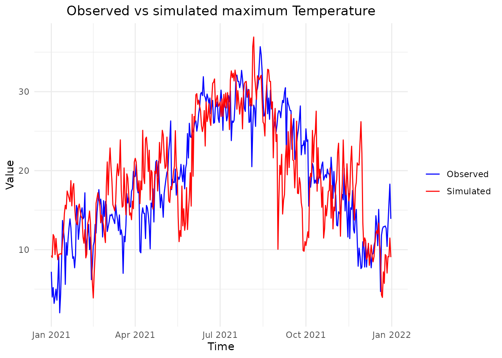
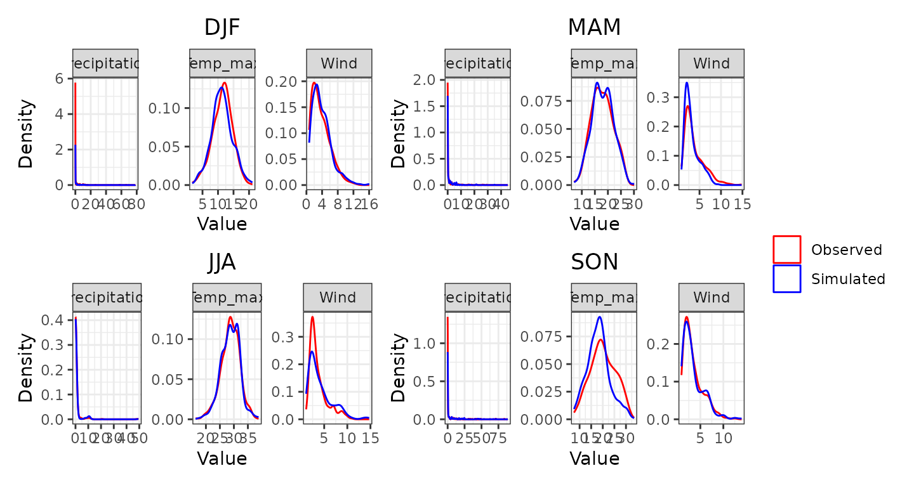
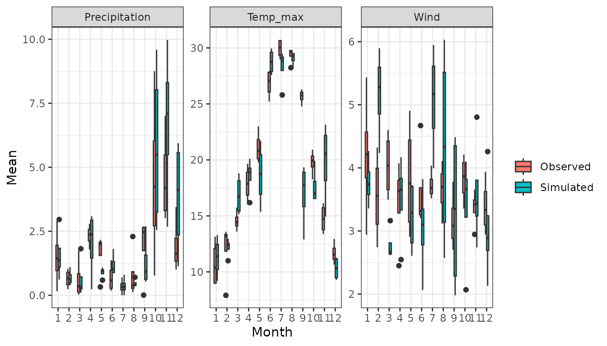
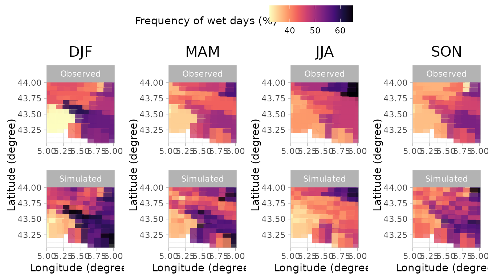

Introduction
This vignette provides a step-by-step guide on running a stochastic
weather generator using the MSTWeatherGen package. From
loading the historical weather data and spatial coordinates, performing
parameter estimation, to running simulations and generating validation
plots. This guide covers all you need to get started with
MSTWeatherGen, but does not provide the technical details
of the methods considered.
Data
Toy data
For our simulation, we will need historical weather data of multiple variables and geographic coordinates. Below, we load these datasets stored within the package.
The data considered here is the meteorological dataset SAFRAN, developed by Météo-France. We only consider a small region in the south of France for the period 2017-2021. We consider 3 variables: precipitation, wind, and maximum temperature.
Note on data needed for MSTWeatherGen
MSTWeatherGen is designed for multivariate and
spatio-temporal weather generation. Therefore, the meteorological data
to be used (here data) needs to be multiple variables (at
least two variables) defined in a spatial domain (characterized by
coordinates) and a temporal domain (defined by
dates). Thus, the data needs to be in three dimensions
(timelocationvariable).
Alongside the meteorological data, the user needs to provide a two
column matrix of coordinates of each locations considered. Each row
i of this matrix (coordinates[i,]) corresponds
to the x and y coordinates of the datum data[,i,]. Finally,
the user needs also to provide the time (dates here)
corresponding to each point in the first dimension of
data.
Another important point about the meteorological data is the
precipitation variable. Being a special variable in the estimation and
simulation (as it has many zeros), if it is considered, it has to be the
first variable in the meteorological data. If the user wants, one can
also provide the names of the variables considered (here
names).
Estimation
With the data loaded, we proceed to estimate the parameters required
for simulation. This involves determining weather types, computing
transition probabilities between weather types, estimating the
transformation functions of the variables into normal distribution, and
finally estimating the parameters of the multivariate spatio-temporal
covariance function, all using the MSTWeatherGen_Estim
function.
Before heading to the estimation, we will detail some important
considerations that will help the user use the
MSTWeatherGen_Estim function. First, if the data exhibit
seasonality, it has to be handled somehow. Here, propose to treat each
season separately meaning that the parameters of the model (weather
types, transformation functions, and covariance function) are estimated
at each season. The seasons are up to the user to define using the
following format:
seasons <- list(
s1 = list(min_day = 1, max_day = 29, min_month = 12, max_month = 2),
s2 = list(min_day = 1, max_day = 31, min_month = 3, max_month = 5),
s3 = list(min_day = 1, max_day = 31, min_month = 6, max_month = 8),
s4 = list(min_day = 1, max_day = 30, min_month = 9, max_month = 11)
)We can also provide the names of each season, to be used later for the validation plots:
names_seasons = c("DJF", "MAM", "JJA", "SON")If the considered data does not exhibit seasonality one can use the
whole period to estimate the parameters. To do that, one needs to fix
the argument by_season of the
MSTWeatherGen_Estim as False.
All the data being ready, we can now proceed to the estimation of the
parameters using MSTWeatherGen_Estim function.
names_weather_types = names
swg = MSTWeatherGen_Estim(data = data, seasons = seasons,dates = dates, names = names, by_season = T, scale = T,
precipitation = T,names_weather_types = names_weather_types,
coordinates= coordinates, max_it=100, tmax=1, n1=3, n2=3)
#> ---Final iteration--- 27
#> --Singular Value-- 2164.916 -- Local Percent -- 70.26529 %
#> ---Final iteration--- 34
#> --Singular Value-- 412.6398 -- Local Percent -- 45.76965 %
#> ---Final iteration--- 1
#> --Singular Value-- 144.612 -- Local Percent -- 56.13031 %
#>
#> -----Execution Time----- 2.955
#> Nelder-Mead direct search function minimizer
#> function value for initial parameters = 137.498584
#> Scaled convergence tolerance is 2.04889e-06
#> Stepsize computed as 0.100000
#> BUILD 3 137.534475 137.483541
#> EXTENSION 5 137.498584 137.171996
#> EXTENSION 7 137.483541 136.447626
#> EXTENSION 9 137.171996 115.499672
#> REFLECTION 11 136.447626 93.498874
#> HI-REDUCTION 13 130.857143 93.498874
#> HI-REDUCTION 15 122.896231 93.498874
#> REFLECTION 17 115.499672 66.369290
#> HI-REDUCTION 19 102.760656 66.369290
#> REFLECTION 21 93.498874 51.712460
#> HI-REDUCTION 23 78.741403 51.712460
#> HI-REDUCTION 25 68.894723 51.712460
#> LO-REDUCTION 27 66.369290 51.712460
#> HI-REDUCTION 29 58.132791 51.712460
#> HI-REDUCTION 31 54.427472 51.712460
#> LO-REDUCTION 33 52.620820 51.712460
#> HI-REDUCTION 35 51.929025 51.712460
#> HI-REDUCTION 37 51.753822 51.712460
#> HI-REDUCTION 39 51.748538 51.712460
#> HI-REDUCTION 41 51.717332 51.712460
#> HI-REDUCTION 43 51.717125 51.712460
#> LO-REDUCTION 45 51.712527 51.711557
#> REFLECTION 47 51.712460 51.711220
#> REFLECTION 49 51.711557 51.710760
#> REFLECTION 51 51.711220 51.710160
#> REFLECTION 53 51.710760 51.710127
#> REFLECTION 55 51.710160 51.709272
#> LO-REDUCTION 57 51.710127 51.709272
#> REFLECTION 59 51.709275 51.709221
#> HI-REDUCTION 61 51.709272 51.708880
#> EXTENSION 63 51.709221 51.708310
#> LO-REDUCTION 65 51.708880 51.708310
#> EXTENSION 67 51.708559 51.707660
#> LO-REDUCTION 69 51.708310 51.707660
#> EXTENSION 71 51.707666 51.707204
#> LO-REDUCTION 73 51.707660 51.707197
#> LO-REDUCTION 75 51.707293 51.707197
#> LO-REDUCTION 77 51.707204 51.707195
#> HI-REDUCTION 79 51.707197 51.707168
#> LO-REDUCTION 81 51.707195 51.707168
#> LO-REDUCTION 83 51.707178 51.707168
#> LO-REDUCTION 85 51.707176 51.707168
#> REFLECTION 87 51.707173 51.707167
#> Exiting from Nelder Mead minimizer
#> 89 function evaluations used
#> Nelder-Mead direct search function minimizer
#> function value for initial parameters = 840.657016
#> Scaled convergence tolerance is 1.25268e-05
#> Stepsize computed as 0.100000
#> BUILD 3 840.765597 840.611500
#> EXTENSION 5 840.657016 839.669532
#> EXTENSION 7 840.611500 837.478171
#> EXTENSION 9 839.669532 768.208721
#> REFLECTION 11 837.478171 687.893996
#> HI-REDUCTION 13 820.319814 687.893996
#> HI-REDUCTION 15 794.432656 687.893996
#> REFLECTION 17 768.208721 659.608160
#> HI-REDUCTION 19 720.713664 659.608160
#> HI-REDUCTION 21 688.464622 659.608160
#> REFLECTION 23 687.893996 658.442180
#> HI-REDUCTION 25 659.608160 656.216700
#> LO-REDUCTION 27 658.442180 650.697402
#> HI-REDUCTION 29 656.216700 647.452817
#> LO-REDUCTION 31 650.697402 647.452817
#> HI-REDUCTION 33 648.268332 647.452817
#> HI-REDUCTION 35 647.638057 647.452817
#> HI-REDUCTION 37 647.594296 647.452817
#> LO-REDUCTION 39 647.503462 647.452817
#> EXTENSION 41 647.498230 647.379570
#> LO-REDUCTION 43 647.452817 647.379570
#> EXTENSION 45 647.398920 647.245222
#> LO-REDUCTION 47 647.379570 647.245222
#> EXTENSION 49 647.258055 646.983043
#> EXTENSION 51 647.245222 646.808841
#> EXTENSION 53 646.983043 646.202286
#> EXTENSION 55 646.808841 645.349204
#> LO-REDUCTION 57 646.202286 645.349204
#> REFLECTION 59 645.546334 645.037507
#> EXTENSION 61 645.349204 644.038876
#> LO-REDUCTION 63 645.037507 644.038876
#> EXTENSION 65 644.423837 642.667267
#> LO-REDUCTION 67 644.038876 642.667267
#> REFLECTION 69 643.342410 642.502602
#> EXTENSION 71 642.667267 641.431723
#> LO-REDUCTION 73 642.502602 641.431723
#> HI-REDUCTION 75 641.754719 641.431723
#> HI-REDUCTION 77 641.582267 641.431723
#> LO-REDUCTION 79 641.479050 641.367976
#> HI-REDUCTION 81 641.431723 641.355692
#> HI-REDUCTION 83 641.367976 641.355692
#> LO-REDUCTION 85 641.365618 641.347619
#> HI-REDUCTION 87 641.355692 641.347483
#> HI-REDUCTION 89 641.347970 641.347483
#> HI-REDUCTION 91 641.347619 641.346354
#> HI-REDUCTION 93 641.347483 641.346349
#> HI-REDUCTION 95 641.346354 641.346181
#> HI-REDUCTION 97 641.346349 641.346115
#> REFLECTION 99 641.346181 641.346113
#> Exiting from Nelder Mead minimizer
#> 101 function evaluations used
#> Nelder-Mead direct search function minimizer
#> function value for initial parameters = 860.451448
#> Scaled convergence tolerance is 1.28217e-05
#> Stepsize computed as 0.100000
#> BUILD 3 860.574091 860.400031
#> EXTENSION 5 860.451448 859.335708
#> EXTENSION 7 860.400031 856.855458
#> EXTENSION 9 859.335708 769.995702
#> REFLECTION 11 856.855458 639.799523
#> HI-REDUCTION 13 837.058719 639.799523
#> HI-REDUCTION 15 805.232688 639.799523
#> REFLECTION 17 769.995702 439.713375
#> HI-REDUCTION 19 698.451662 439.713375
#> REFLECTION 21 639.799523 314.897684
#> HI-REDUCTION 23 534.977985 314.897684
#> HI-REDUCTION 25 460.144269 314.897684
#> LO-REDUCTION 27 439.713375 314.897684
#> HI-REDUCTION 29 362.130420 314.897684
#> HI-REDUCTION 31 327.920337 314.897684
#> HI-REDUCTION 33 319.424850 314.897684
#> HI-REDUCTION 35 316.692268 313.562565
#> LO-REDUCTION 37 314.897684 313.562565
#> HI-REDUCTION 39 313.937062 313.562565
#> REFLECTION 41 313.825898 313.556347
#> EXTENSION 43 313.562565 313.183306
#> EXTENSION 45 313.556347 312.587794
#> REFLECTION 47 313.183306 312.092917
#> REFLECTION 49 312.587794 311.578993
#> EXTENSION 51 312.092917 310.789895
#> EXTENSION 53 311.578993 308.143322
#> EXTENSION 55 310.789895 304.610766
#> REFLECTION 57 308.143322 300.940751
#> REFLECTION 59 304.610766 294.258220
#> HI-REDUCTION 61 300.940751 294.258220
#> HI-REDUCTION 63 299.755985 294.258220
#> LO-REDUCTION 65 298.019733 294.258220
#> LO-REDUCTION 67 294.757299 293.653609
#> HI-REDUCTION 69 294.258220 293.653609
#> LO-REDUCTION 71 294.095116 293.653609
#> HI-REDUCTION 73 293.856634 293.653609
#> LO-REDUCTION 75 293.822029 293.653609
#> LO-REDUCTION 77 293.675984 293.645675
#> HI-REDUCTION 79 293.653609 293.645675
#> LO-REDUCTION 81 293.646656 293.641698
#> HI-REDUCTION 83 293.645675 293.640803
#> HI-REDUCTION 85 293.641698 293.640803
#> LO-REDUCTION 87 293.641217 293.640656
#> HI-REDUCTION 89 293.640803 293.640446
#> HI-REDUCTION 91 293.640656 293.640390
#> LO-REDUCTION 93 293.640446 293.640319
#> HI-REDUCTION 95 293.640390 293.640319
#> HI-REDUCTION 97 293.640335 293.640319
#> Exiting from Nelder Mead minimizer
#> 99 function evaluations used
#> Nelder-Mead direct search function minimizer
#> function value for initial parameters = 206.137730
#> Scaled convergence tolerance is 3.07169e-06
#> Stepsize computed as 0.100000
#> BUILD 3 206.138418 206.137460
#> EXTENSION 5 206.137730 206.126221
#> EXTENSION 7 206.137460 206.084021
#> EXTENSION 9 206.126221 197.730370
#> REFLECTION 11 206.084021 177.800975
#> HI-REDUCTION 13 205.184623 177.800975
#> HI-REDUCTION 15 202.252808 177.800975
#> REFLECTION 17 197.730370 142.273884
#> HI-REDUCTION 19 187.177913 142.273884
#> REFLECTION 21 177.800975 128.408562
#> HI-REDUCTION 23 159.505258 128.408562
#> HI-REDUCTION 25 146.025042 128.408562
#> LO-REDUCTION 27 142.273884 126.605475
#> HI-REDUCTION 29 131.588054 126.605475
#> HI-REDUCTION 31 128.408562 126.605475
#> HI-REDUCTION 33 127.670626 126.605475
#> HI-REDUCTION 35 126.875274 126.605475
#> HI-REDUCTION 37 126.803154 126.605475
#> LO-REDUCTION 39 126.688552 126.605475
#> EXTENSION 41 126.678026 126.494075
#> LO-REDUCTION 43 126.605475 126.494075
#> EXTENSION 45 126.505642 126.221194
#> LO-REDUCTION 47 126.494075 126.221194
#> EXTENSION 49 126.265442 125.639078
#> LO-REDUCTION 51 126.221194 125.639078
#> EXTENSION 53 125.719874 124.261920
#> EXTENSION 55 125.639078 123.596209
#> EXTENSION 57 124.261920 121.081022
#> HI-REDUCTION 59 123.596209 121.081022
#> REFLECTION 61 122.828064 120.138680
#> HI-REDUCTION 63 121.081022 120.138680
#> REFLECTION 65 120.966039 119.954187
#> REFLECTION 67 120.138680 119.316308
#> REFLECTION 69 119.954187 118.997893
#> REFLECTION 71 119.316308 118.684436
#> REFLECTION 73 118.997893 118.150711
#> LO-REDUCTION 75 118.684436 117.570838
#> LO-REDUCTION 77 118.150711 117.570838
#> REFLECTION 79 117.748983 117.545399
#> HI-REDUCTION 81 117.570838 117.218041
#> EXTENSION 83 117.545399 116.874142
#> HI-REDUCTION 85 117.218041 116.874142
#> EXTENSION 87 117.090667 116.674387
#> REFLECTION 89 116.874142 116.609846
#> HI-REDUCTION 91 116.674387 116.609846
#> HI-REDUCTION 93 116.651199 116.580959
#> LO-REDUCTION 95 116.609846 116.575648
#> HI-REDUCTION 97 116.580959 116.570591
#> HI-REDUCTION 99 116.575648 116.559946
#> Exiting from Nelder Mead minimizer
#> 101 function evaluations used
#> Nelder-Mead direct search function minimizer
#> function value for initial parameters = 424.007595
#> Scaled convergence tolerance is 6.31821e-06
#> Stepsize computed as 0.100000
#> BUILD 3 424.008897 424.007082
#> EXTENSION 5 424.007595 423.985936
#> EXTENSION 7 424.007082 423.907252
#> EXTENSION 9 423.985936 409.851092
#> REFLECTION 11 423.907252 379.530965
#> HI-REDUCTION 13 422.293457 379.530965
#> HI-REDUCTION 15 417.277521 379.530965
#> REFLECTION 17 409.851092 336.238199
#> HI-REDUCTION 19 393.358226 336.238199
#> LO-REDUCTION 21 379.530965 336.238199
#> HI-REDUCTION 23 360.455711 336.238199
#> HI-REDUCTION 25 348.573842 336.238199
#> REFLECTION 27 337.139983 332.712516
#> LO-REDUCTION 29 336.238199 331.654390
#> HI-REDUCTION 31 332.712516 331.654390
#> HI-REDUCTION 33 332.657019 331.654390
#> HI-REDUCTION 35 331.904733 331.654390
#> HI-REDUCTION 37 331.824765 331.654390
#> REFLECTION 39 331.736980 331.618336
#> EXTENSION 41 331.654390 331.393568
#> EXTENSION 43 331.618336 331.272273
#> EXTENSION 45 331.393568 330.574466
#> EXTENSION 47 331.272273 330.359795
#> EXTENSION 49 330.574466 328.012334
#> LO-REDUCTION 51 330.359795 328.012334
#> EXTENSION 53 328.945116 324.767197
#> EXTENSION 55 328.012334 320.854118
#> HI-REDUCTION 57 325.049280 320.854118
#> HI-REDUCTION 59 324.767197 320.854118
#> REFLECTION 61 323.602706 320.400093
#> LO-REDUCTION 63 320.854118 319.892697
#> HI-REDUCTION 65 320.400093 319.892697
#> HI-REDUCTION 67 320.226139 319.892697
#> LO-REDUCTION 69 320.064460 319.878367
#> HI-REDUCTION 71 319.897441 319.878367
#> HI-REDUCTION 73 319.892697 319.862296
#> HI-REDUCTION 75 319.878367 319.862296
#> LO-REDUCTION 77 319.862505 319.862295
#> HI-REDUCTION 79 319.862296 319.858817
#> HI-REDUCTION 81 319.862295 319.858817
#> LO-REDUCTION 83 319.859186 319.858505
#> HI-REDUCTION 85 319.858817 319.858497
#> HI-REDUCTION 87 319.858505 319.858373
#> HI-REDUCTION 89 319.858497 319.858358
#> LO-REDUCTION 91 319.858373 319.858333
#> HI-REDUCTION 93 319.858358 319.858327
#> HI-REDUCTION 95 319.858333 319.858322
#> Exiting from Nelder Mead minimizer
#> 97 function evaluations used
#> Nelder-Mead direct search function minimizer
#> function value for initial parameters = 431.067634
#> Scaled convergence tolerance is 6.42341e-06
#> Stepsize computed as 0.100000
#> BUILD 3 431.069309 431.066974
#> EXTENSION 5 431.067634 431.039702
#> EXTENSION 7 431.066974 430.937964
#> EXTENSION 9 431.039702 412.416263
#> REFLECTION 11 430.937964 369.574137
#> HI-REDUCTION 13 428.836212 369.574137
#> HI-REDUCTION 15 422.257088 369.574137
#> REFLECTION 17 412.416263 278.033785
#> HI-REDUCTION 19 389.831113 278.033785
#> REFLECTION 21 369.574137 167.674952
#> HI-REDUCTION 23 326.974591 167.674952
#> LO-REDUCTION 25 278.033785 139.394696
#> HI-REDUCTION 27 226.419970 139.394696
#> REFLECTION 29 167.674952 86.070741
#> LO-REDUCTION 31 139.394696 85.710983
#> HI-REDUCTION 33 106.012233 85.710983
#> HI-REDUCTION 35 92.565811 85.710983
#> HI-REDUCTION 37 87.993429 85.710983
#> LO-REDUCTION 39 86.086166 85.710983
#> HI-REDUCTION 41 86.070741 85.710983
#> EXTENSION 43 85.851088 85.001121
#> LO-REDUCTION 45 85.710983 85.001121
#> EXTENSION 47 85.262524 83.825147
#> EXTENSION 49 85.001121 82.679333
#> EXTENSION 51 83.825147 78.794844
#> EXTENSION 53 82.679333 72.401676
#> REFLECTION 55 78.794844 68.787480
#> REFLECTION 57 72.401676 63.914929
#> HI-REDUCTION 59 68.787480 63.914929
#> EXTENSION 61 67.879860 55.534889
#> LO-REDUCTION 63 63.914929 55.534889
#> EXTENSION 65 59.789312 43.267745
#> LO-REDUCTION 67 55.534889 43.267745
#> HI-REDUCTION 69 49.057968 43.267745
#> HI-REDUCTION 71 46.331286 43.267745
#> REFLECTION 73 46.076280 42.579438
#> HI-REDUCTION 75 43.891041 42.579438
#> HI-REDUCTION 77 43.267745 42.579438
#> HI-REDUCTION 79 43.046834 42.579438
#> REFLECTION 81 42.734907 42.512816
#> REFLECTION 83 42.579438 42.486834
#> HI-REDUCTION 85 42.512816 42.436781
#> HI-REDUCTION 87 42.486834 42.410017
#> HI-REDUCTION 89 42.436781 42.410017
#> HI-REDUCTION 91 42.426683 42.410017
#> LO-REDUCTION 93 42.413551 42.409124
#> HI-REDUCTION 95 42.410017 42.405288
#> HI-REDUCTION 97 42.409124 42.405288
#> REFLECTION 99 42.406448 42.405268
#> Exiting from Nelder Mead minimizer
#> 101 function evaluations used
#> Nelder-Mead direct search function minimizer
#> function value for initial parameters = 20.356972
#> Scaled convergence tolerance is 3.03343e-07
#> Stepsize computed as 0.100000
#> BUILD 3 20.370358 20.351364
#> EXTENSION 5 20.356972 20.235325
#> EXTENSION 7 20.351364 19.967065
#> EXTENSION 9 20.235325 13.800710
#> REFLECTION 11 19.967065 9.990672
#> HI-REDUCTION 13 17.996606 9.990672
#> HI-REDUCTION 15 15.588471 9.990672
#> REFLECTION 17 13.800710 6.384916
#> HI-REDUCTION 19 11.413437 6.384916
#> REFLECTION 21 9.990672 3.402354
#> HI-REDUCTION 23 7.986347 3.402354
#> REFLECTION 25 6.384916 -2.100651
#> HI-REDUCTION 27 4.432083 -2.100651
#> REFLECTION 29 3.402354 -6.658047
#> HI-REDUCTION 31 0.998264 -6.658047
#> HI-REDUCTION 33 -0.867637 -6.658047
#> REFLECTION 35 -2.100651 -13.315932
#> HI-REDUCTION 37 -4.464003 -13.315932
#> HI-REDUCTION 39 -6.224264 -13.315932
#> REFLECTION 41 -6.658047 -15.034787
#> HI-REDUCTION 43 -9.087155 -15.034787
#> HI-REDUCTION 45 -10.985013 -15.034787
#> REFLECTION 47 -13.315932 -24.455929
#> HI-REDUCTION 49 -15.034787 -24.455929
#> REFLECTION 51 -15.075331 -25.099693
#> HI-REDUCTION 53 -17.856942 -25.099693
#> HI-REDUCTION 55 -20.197770 -25.099693
#> HI-REDUCTION 57 -21.975600 -25.099693
#> REFLECTION 59 -24.455929 -31.663756
#> REFLECTION 61 -25.099693 -35.698539
#> HI-REDUCTION 63 -27.673324 -35.698539
#> HI-REDUCTION 65 -29.726620 -35.698539
#> HI-REDUCTION 67 -31.191634 -35.698539
#> REFLECTION 69 -31.663756 -36.905893
#> HI-REDUCTION 71 -33.443679 -36.905893
#> REFLECTION 73 -35.698539 -43.533992
#> HI-REDUCTION 75 -36.905893 -43.533992
#> REFLECTION 77 -37.144932 -44.593344
#> HI-REDUCTION 79 -39.478673 -44.593344
#> HI-REDUCTION 81 -41.251863 -44.593344
#> REFLECTION 83 -43.533992 -50.896866
#> REFLECTION 85 -44.593344 -60.480007
#> HI-REDUCTION 87 -47.302096 -60.480007
#> HI-REDUCTION 89 -49.532502 -60.480007
#> HI-REDUCTION 91 -50.896866 -60.480007
#> REFLECTION 93 -51.183481 -62.993366
#> HI-REDUCTION 95 -54.051921 -62.993366
#> HI-REDUCTION 97 -56.510922 -62.993366
#> HI-REDUCTION 99 -58.425748 -62.993366
#> Exiting from Nelder Mead minimizer
#> 101 function evaluations used
#> Nelder-Mead direct search function minimizer
#> function value for initial parameters = 1093.285631
#> Scaled convergence tolerance is 1.62912e-05
#> Stepsize computed as 0.100000
#> BUILD 3 1093.441906 1093.220116
#> EXTENSION 5 1093.285631 1091.863598
#> EXTENSION 7 1093.220116 1088.702715
#> EXTENSION 9 1091.863598 989.997382
#> REFLECTION 11 1088.702715 869.032882
#> HI-REDUCTION 13 1063.792963 869.032882
#> HI-REDUCTION 15 1026.515118 869.032882
#> REFLECTION 17 989.997382 662.588472
#> HI-REDUCTION 19 922.773987 662.588472
#> REFLECTION 21 869.032882 492.542907
#> HI-REDUCTION 23 767.533410 492.542907
#> HI-REDUCTION 25 686.585803 492.542907
#> REFLECTION 27 662.588472 479.365666
#> HI-REDUCTION 29 567.151171 479.365666
#> HI-REDUCTION 31 518.227312 479.365666
#> LO-REDUCTION 33 492.542907 479.365666
#> HI-REDUCTION 35 482.821989 479.365666
#> HI-REDUCTION 37 481.672863 479.365666
#> LO-REDUCTION 39 480.385158 479.365666
#> EXTENSION 41 480.138756 477.872476
#> LO-REDUCTION 43 479.365666 477.872476
#> EXTENSION 45 478.437685 475.318443
#> EXTENSION 47 477.872476 473.409112
#> EXTENSION 49 475.318443 465.359334
#> LO-REDUCTION 51 473.409112 465.359334
#> EXTENSION 53 465.387306 456.758030
#> EXTENSION 55 465.359334 443.497752
#> HI-REDUCTION 57 456.758030 443.497752
#> REFLECTION 59 453.673963 443.463745
#> REFLECTION 61 443.497752 431.026113
#> LO-REDUCTION 63 443.463745 431.026113
#> REFLECTION 65 433.910298 429.763459
#> HI-REDUCTION 67 431.026113 427.757313
#> EXTENSION 69 429.763459 420.061031
#> LO-REDUCTION 71 427.757313 420.061031
#> LO-REDUCTION 73 423.998010 420.061031
#> HI-REDUCTION 75 421.284173 420.061031
#> HI-REDUCTION 77 420.956180 420.061031
#> LO-REDUCTION 79 420.483044 420.061031
#> HI-REDUCTION 81 420.280600 420.061031
#> LO-REDUCTION 83 420.185848 420.047797
#> LO-REDUCTION 85 420.061031 420.047797
#> LO-REDUCTION 87 420.056341 420.037908
#> HI-REDUCTION 89 420.047797 420.033896
#> HI-REDUCTION 91 420.037908 420.033896
#> REFLECTION 93 420.036266 420.032946
#> HI-REDUCTION 95 420.033896 420.032499
#> HI-REDUCTION 97 420.032946 420.032351
#> HI-REDUCTION 99 420.032499 420.032198
#> Exiting from Nelder Mead minimizer
#> 101 function evaluations used
#> Nelder-Mead direct search function minimizer
#> function value for initial parameters = 1095.391049
#> Scaled convergence tolerance is 1.63226e-05
#> Stepsize computed as 0.100000
#> BUILD 3 1095.550421 1095.324234
#> EXTENSION 5 1095.391049 1093.940512
#> EXTENSION 7 1095.324234 1090.714208
#> EXTENSION 9 1093.940512 987.638430
#> REFLECTION 11 1090.714208 853.191265
#> HI-REDUCTION 13 1065.160331 853.191265
#> HI-REDUCTION 15 1026.384865 853.191265
#> REFLECTION 17 987.638430 591.860596
#> HI-REDUCTION 19 914.191011 591.860596
#> REFLECTION 21 853.191265 273.715170
#> HI-REDUCTION 23 730.787650 273.715170
#> REFLECTION 25 591.860596 41.737298
#> HI-REDUCTION 27 386.525189 41.737298
#> HI-REDUCTION 29 273.715170 41.737298
#> HI-REDUCTION 31 240.167873 41.737298
#> HI-REDUCTION 33 164.603087 41.737298
#> HI-REDUCTION 35 124.781862 41.737298
#> HI-REDUCTION 37 74.370061 41.642947
#> HI-REDUCTION 39 41.737298 10.405712
#> HI-REDUCTION 41 41.642947 -40.275591
#> REFLECTION 43 10.405712 -41.687344
#> HI-REDUCTION 45 -25.617494 -41.687344
#> HI-REDUCTION 47 -37.905939 -41.687344
#> LO-REDUCTION 49 -40.275591 -42.981030
#> HI-REDUCTION 51 -41.687344 -43.524782
#> LO-REDUCTION 53 -42.981030 -43.590859
#> HI-REDUCTION 55 -43.524782 -43.671714
#> LO-REDUCTION 57 -43.590859 -43.722008
#> HI-REDUCTION 59 -43.671714 -43.722008
#> LO-REDUCTION 61 -43.715186 -43.722008
#> REFLECTION 63 -43.720913 -43.730839
#> HI-REDUCTION 65 -43.722008 -43.734762
#> REFLECTION 67 -43.730839 -43.741947
#> HI-REDUCTION 69 -43.734762 -43.741947
#> EXTENSION 71 -43.737401 -43.749312
#> EXTENSION 73 -43.741947 -43.762942
#> EXTENSION 75 -43.749312 -43.783444
#> EXTENSION 77 -43.762942 -43.823939
#> EXTENSION 79 -43.783444 -43.880382
#> EXTENSION 81 -43.823939 -44.000606
#> EXTENSION 83 -43.880382 -44.152615
#> EXTENSION 85 -44.000606 -44.510998
#> EXTENSION 87 -44.152615 -44.902740
#> EXTENSION 89 -44.510998 -45.981009
#> EXTENSION 91 -44.902740 -46.894790
#> EXTENSION 93 -45.981009 -50.283956
#> EXTENSION 95 -46.894790 -52.234059
#> EXTENSION 97 -50.283956 -67.988244
#> EXTENSION 99 -52.234059 -80.381956
#> Exiting from Nelder Mead minimizer
#> 101 function evaluations used
#> Nelder-Mead direct search function minimizer
#> function value for initial parameters = 410.999653
#> Scaled convergence tolerance is 6.12437e-06
#> Stepsize computed as 0.100000
#> BUILD 3 411.001124 410.999073
#> EXTENSION 5 410.999653 410.975553
#> EXTENSION 7 410.999073 410.889864
#> EXTENSION 9 410.975553 397.824447
#> REFLECTION 11 410.889864 365.021900
#> HI-REDUCTION 13 409.283441 365.021900
#> HI-REDUCTION 15 404.675552 365.021900
#> REFLECTION 17 397.824447 298.264863
#> HI-REDUCTION 19 381.010908 298.264863
#> REFLECTION 21 365.021900 271.344209
#> HI-REDUCTION 23 331.387433 271.344209
#> HI-REDUCTION 25 305.604980 271.344209
#> LO-REDUCTION 27 298.264863 268.205950
#> HI-REDUCTION 29 277.827299 268.205950
#> HI-REDUCTION 31 271.344209 268.205950
#> HI-REDUCTION 33 270.317389 268.205950
#> HI-REDUCTION 35 268.761340 268.205950
#> HI-REDUCTION 37 268.521758 268.205950
#> HI-REDUCTION 39 268.375711 268.205950
#> LO-REDUCTION 41 268.326887 268.205950
#> EXTENSION 43 268.263813 268.023896
#> LO-REDUCTION 45 268.205950 268.023896
#> EXTENSION 47 268.065810 267.742713
#> EXTENSION 49 268.023896 267.450919
#> EXTENSION 51 267.742713 266.861820
#> EXTENSION 53 267.450919 265.636243
#> REFLECTION 55 266.861820 265.429221
#> EXTENSION 57 265.636243 262.400710
#> LO-REDUCTION 59 265.429221 262.400710
#> REFLECTION 61 263.642920 261.553725
#> EXTENSION 63 262.400710 258.014380
#> HI-REDUCTION 65 261.553725 258.014380
#> EXTENSION 67 260.752939 255.677116
#> EXTENSION 69 258.014380 248.335324
#> LO-REDUCTION 71 255.677116 248.335324
#> HI-REDUCTION 73 251.826868 248.335324
#> REFLECTION 75 249.213891 245.241319
#> HI-REDUCTION 77 248.335324 245.241319
#> LO-REDUCTION 79 247.342165 245.241319
#> REFLECTION 81 245.504751 245.085642
#> HI-REDUCTION 83 245.241319 244.836675
#> HI-REDUCTION 85 245.085642 244.685365
#> HI-REDUCTION 87 244.836675 244.315217
#> REFLECTION 89 244.685365 244.233947
#> HI-REDUCTION 91 244.434080 244.233947
#> LO-REDUCTION 93 244.315217 244.233947
#> HI-REDUCTION 95 244.261765 244.233947
#> LO-REDUCTION 97 244.253697 244.233947
#> LO-REDUCTION 99 244.236349 244.231057
#> Exiting from Nelder Mead minimizer
#> 101 function evaluations used
#> Nelder-Mead direct search function minimizer
#> function value for initial parameters = 426.377104
#> Scaled convergence tolerance is 6.35351e-06
#> Stepsize computed as 0.100000
#> BUILD 3 426.378247 426.376653
#> EXTENSION 5 426.377104 426.358355
#> EXTENSION 7 426.376653 426.291583
#> EXTENSION 9 426.358355 415.432918
#> REFLECTION 11 426.291583 385.575421
#> HI-REDUCTION 13 425.025043 385.575421
#> HI-REDUCTION 15 421.279511 385.575421
#> REFLECTION 17 415.432918 323.958184
#> HI-REDUCTION 19 400.342437 323.958184
#> REFLECTION 21 385.575421 320.026074
#> HI-REDUCTION 23 353.996675 320.026074
#> HI-REDUCTION 25 330.566227 320.026074
#> HI-REDUCTION 27 323.958184 318.021219
#> HI-REDUCTION 29 320.026074 313.585382
#> HI-REDUCTION 31 318.021219 306.763052
#> LO-REDUCTION 33 313.585382 306.696636
#> LO-REDUCTION 35 307.431333 306.696636
#> HI-REDUCTION 37 306.763052 306.564435
#> EXTENSION 39 306.696636 306.242761
#> HI-REDUCTION 41 306.564435 306.242761
#> EXTENSION 43 306.398341 305.807374
#> EXTENSION 45 306.242761 305.238673
#> EXTENSION 47 305.807374 303.971349
#> EXTENSION 49 305.238673 301.750082
#> EXTENSION 51 303.971349 297.595362
#> EXTENSION 53 301.750082 285.075570
#> LO-REDUCTION 55 297.595362 285.075570
#> REFLECTION 57 285.455447 278.616288
#> EXTENSION 59 285.075570 263.194606
#> HI-REDUCTION 61 278.616288 263.194606
#> HI-REDUCTION 63 273.274945 263.194606
#> REFLECTION 65 265.511241 243.564017
#> HI-REDUCTION 67 263.194606 243.564017
#> LO-REDUCTION 69 256.814169 243.564017
#> LO-REDUCTION 71 249.068754 238.406444
#> HI-REDUCTION 73 244.374870 238.406444
#> LO-REDUCTION 75 243.564017 238.406444
#> REFLECTION 77 240.328578 234.921413
#> EXTENSION 79 238.406444 231.632985
#> HI-REDUCTION 81 235.719926 231.632985
#> HI-REDUCTION 83 234.921413 231.632985
#> HI-REDUCTION 85 234.274170 231.632985
#> REFLECTION 87 233.406797 229.970868
#> HI-REDUCTION 89 232.128367 229.970868
#> HI-REDUCTION 91 231.632985 229.970868
#> LO-REDUCTION 93 231.423899 229.970868
#> HI-REDUCTION 95 230.705132 229.970868
#> LO-REDUCTION 97 230.427793 229.970868
#> HI-REDUCTION 99 230.208608 229.970868
#> Exiting from Nelder Mead minimizer
#> 101 function evaluations used
#> Nelder-Mead direct search function minimizer
#> function value for initial parameters = 428.808903
#> Scaled convergence tolerance is 6.38975e-06
#> Stepsize computed as 0.100000
#> BUILD 3 428.810437 428.808299
#> EXTENSION 5 428.808903 428.783738
#> EXTENSION 7 428.808299 428.694075
#> EXTENSION 9 428.783738 414.101180
#> REFLECTION 11 428.694075 373.555541
#> HI-REDUCTION 13 426.987523 373.555541
#> HI-REDUCTION 15 421.931407 373.555541
#> REFLECTION 17 414.101180 272.397013
#> HI-REDUCTION 19 393.884982 272.397013
#> REFLECTION 21 373.555541 160.345711
#> HI-REDUCTION 23 326.717005 160.345711
#> LO-REDUCTION 25 272.397013 134.397950
#> HI-REDUCTION 27 218.110937 134.397950
#> REFLECTION 29 160.345711 106.370231
#> HI-REDUCTION 31 134.397950 106.370231
#> LO-REDUCTION 33 132.176809 101.570609
#> HI-REDUCTION 35 109.594666 101.570609
#> HI-REDUCTION 37 106.370231 101.570609
#> HI-REDUCTION 39 102.666137 101.570609
#> HI-REDUCTION 41 101.789445 101.570609
#> HI-REDUCTION 43 101.621251 101.414620
#> HI-REDUCTION 45 101.570609 101.414620
#> EXTENSION 47 101.490250 101.230440
#> HI-REDUCTION 49 101.414620 101.230440
#> EXTENSION 51 101.351312 100.983898
#> EXTENSION 53 101.230440 100.761096
#> EXTENSION 55 100.983898 99.925142
#> EXTENSION 57 100.761096 99.797572
#> EXTENSION 59 99.925142 97.040069
#> LO-REDUCTION 61 99.797572 97.040069
#> EXTENSION 63 98.274904 90.455988
#> EXTENSION 65 97.040069 84.033173
#> EXTENSION 67 90.455988 57.961163
#> LO-REDUCTION 69 84.033173 57.961163
#> HI-REDUCTION 71 70.442180 57.961163
#> HI-REDUCTION 73 63.969223 57.961163
#> HI-REDUCTION 75 63.563896 57.961163
#> EXTENSION 77 61.727788 50.613665
#> EXTENSION 79 57.961163 37.881064
#> REFLECTION 81 50.613665 20.463182
#> HI-REDUCTION 83 41.930374 20.463182
#> HI-REDUCTION 85 37.881064 20.463182
#> LO-REDUCTION 87 36.689501 20.463182
#> HI-REDUCTION 89 29.795074 20.463182
#> REFLECTION 91 24.651190 18.809126
#> HI-REDUCTION 93 21.692775 18.809126
#> REFLECTION 95 20.463182 16.696376
#> HI-REDUCTION 97 18.809126 16.696376
#> EXTENSION 99 18.051030 15.723814
#> Exiting from Nelder Mead minimizer
#> 101 function evaluations used
#> Nelder-Mead direct search function minimizer
#> function value for initial parameters = 151.670998
#> Scaled convergence tolerance is 2.26007e-06
#> Stepsize computed as 0.100000
#> Exiting from Nelder Mead minimizer
#> 3 function evaluations used
#> Nelder-Mead direct search function minimizer
#> function value for initial parameters = 303.314190
#> Scaled convergence tolerance is 4.51973e-06
#> Stepsize computed as 0.100000
#> Exiting from Nelder Mead minimizer
#> 3 function evaluations used
#> Nelder-Mead direct search function minimizer
#> function value for initial parameters = 298.222649
#> Scaled convergence tolerance is 4.44386e-06
#> Stepsize computed as 0.100000
#> Exiting from Nelder Mead minimizer
#> 3 function evaluations used
#> ---Final iteration--- 18
#> --Singular Value-- 3707.34 -- Local Percent -- 88.08402 %
#> ---Final iteration--- 195
#> --Singular Value-- 340.7072 -- Local Percent -- 31.63652 %
#> ---Final iteration--- 2
#> --Singular Value-- 134.1718 -- Local Percent -- 54.84311 %
#>
#> -----Execution Time----- 3.975
#> Nelder-Mead direct search function minimizer
#> function value for initial parameters = 181.542327
#> Scaled convergence tolerance is 2.70519e-06
#> Stepsize computed as 0.100000
#> BUILD 3 181.542769 181.542152
#> EXTENSION 5 181.542327 181.535105
#> EXTENSION 7 181.542152 181.509627
#> EXTENSION 9 181.535105 177.876532
#> REFLECTION 11 181.509627 167.546509
#> HI-REDUCTION 13 181.052315 167.546509
#> HI-REDUCTION 15 179.795511 167.546509
#> REFLECTION 17 177.876532 143.112018
#> HI-REDUCTION 19 172.771486 143.112018
#> REFLECTION 21 167.546509 134.571456
#> HI-REDUCTION 23 155.544738 134.571456
#> HI-REDUCTION 25 145.939371 134.571456
#> LO-REDUCTION 27 143.112018 132.779296
#> HI-REDUCTION 29 135.725660 132.779296
#> HI-REDUCTION 31 134.571456 132.779296
#> HI-REDUCTION 33 133.253071 132.779296
#> HI-REDUCTION 35 133.070169 132.779296
#> LO-REDUCTION 37 132.849799 132.779296
#> REFLECTION 39 132.792102 132.692108
#> HI-REDUCTION 41 132.779296 132.692108
#> EXTENSION 43 132.725297 132.640293
#> EXTENSION 45 132.692108 132.453696
#> LO-REDUCTION 47 132.640293 132.453696
#> EXTENSION 49 132.509652 132.058527
#> LO-REDUCTION 51 132.453696 132.058527
#> EXTENSION 53 132.139329 131.183983
#> LO-REDUCTION 55 132.058527 131.183983
#> EXTENSION 57 131.235413 128.982660
#> EXTENSION 59 131.183983 127.702232
#> REFLECTION 61 128.982660 124.441537
#> EXTENSION 63 127.702232 119.267473
#> HI-REDUCTION 65 124.623743 119.267473
#> LO-REDUCTION 67 124.441537 119.267473
#> HI-REDUCTION 69 121.890193 119.267473
#> LO-REDUCTION 71 120.825486 119.267473
#> HI-REDUCTION 73 119.959706 119.267473
#> REFLECTION 75 119.470229 119.185916
#> HI-REDUCTION 77 119.267473 119.185916
#> HI-REDUCTION 79 119.195413 119.141284
#> HI-REDUCTION 81 119.185916 119.113540
#> HI-REDUCTION 83 119.141284 119.092551
#> LO-REDUCTION 85 119.113540 119.092450
#> HI-REDUCTION 87 119.094300 119.092450
#> HI-REDUCTION 89 119.092551 119.090542
#> HI-REDUCTION 91 119.092450 119.090542
#> LO-REDUCTION 93 119.090676 119.090393
#> HI-REDUCTION 95 119.090542 119.090204
#> HI-REDUCTION 97 119.090393 119.090204
#> LO-REDUCTION 99 119.090250 119.090204
#> Exiting from Nelder Mead minimizer
#> 101 function evaluations used
#> Nelder-Mead direct search function minimizer
#> function value for initial parameters = 645.616963
#> Scaled convergence tolerance is 9.62044e-06
#> Stepsize computed as 0.100000
#> BUILD 3 645.619045 645.616142
#> EXTENSION 5 645.616963 645.582993
#> EXTENSION 7 645.616142 645.463161
#> EXTENSION 9 645.582993 629.847359
#> REFLECTION 11 645.463161 590.870499
#> HI-REDUCTION 13 643.326994 590.870499
#> HI-REDUCTION 15 637.702118 590.870499
#> REFLECTION 17 629.847359 491.008361
#> HI-REDUCTION 19 610.447781 491.008361
#> REFLECTION 21 590.870499 408.903468
#> HI-REDUCTION 23 544.492186 408.903468
#> HI-REDUCTION 25 503.752374 408.903468
#> REFLECTION 27 491.008361 406.112432
#> HI-REDUCTION 29 443.286087 406.112432
#> HI-REDUCTION 31 419.852627 406.112432
#> HI-REDUCTION 33 410.727417 406.112432
#> LO-REDUCTION 35 408.903468 405.915211
#> HI-REDUCTION 37 406.112432 405.915211
#> HI-REDUCTION 39 405.973274 405.608113
#> HI-REDUCTION 41 405.915211 405.572990
#> REFLECTION 43 405.608113 405.391712
#> HI-REDUCTION 45 405.572990 405.391712
#> EXTENSION 47 405.464998 405.074626
#> EXTENSION 49 405.391712 404.904961
#> EXTENSION 51 405.074626 403.945392
#> LO-REDUCTION 53 404.904961 403.945392
#> EXTENSION 55 403.984182 401.681552
#> LO-REDUCTION 57 403.945392 401.681552
#> EXTENSION 59 402.004995 396.316538
#> LO-REDUCTION 61 401.681552 396.316538
#> EXTENSION 63 396.514116 387.103782
#> REFLECTION 65 396.316538 383.779439
#> HI-REDUCTION 67 389.722479 383.779439
#> HI-REDUCTION 69 387.103782 383.779439
#> LO-REDUCTION 71 386.783349 383.779439
#> EXTENSION 73 385.188611 379.762067
#> LO-REDUCTION 75 383.779439 379.762067
#> EXTENSION 77 380.802328 376.217748
#> EXTENSION 79 379.762067 373.740078
#> HI-REDUCTION 81 376.217748 373.740078
#> LO-REDUCTION 83 375.988615 373.689390
#> HI-REDUCTION 85 374.259918 373.689390
#> HI-REDUCTION 87 373.740078 373.689390
#> HI-REDUCTION 89 373.718256 373.504982
#> REFLECTION 91 373.689390 373.501074
#> LO-REDUCTION 93 373.525068 373.501074
#> HI-REDUCTION 95 373.504982 373.488744
#> HI-REDUCTION 97 373.501074 373.481989
#> HI-REDUCTION 99 373.488744 373.481989
#> Exiting from Nelder Mead minimizer
#> 101 function evaluations used
#> Nelder-Mead direct search function minimizer
#> function value for initial parameters = 660.277370
#> Scaled convergence tolerance is 9.8389e-06
#> Stepsize computed as 0.100000
#> BUILD 3 660.279754 660.276430
#> EXTENSION 5 660.277370 660.238478
#> EXTENSION 7 660.276430 660.101285
#> EXTENSION 9 660.238478 642.391225
#> REFLECTION 11 660.101285 597.408571
#> HI-REDUCTION 13 657.657754 597.408571
#> HI-REDUCTION 15 651.255346 597.408571
#> REFLECTION 17 642.391225 462.424190
#> HI-REDUCTION 19 620.376131 462.424190
#> REFLECTION 21 597.408571 287.408530
#> HI-REDUCTION 23 538.679939 287.408530
#> REFLECTION 25 462.424190 246.747308
#> HI-REDUCTION 27 348.712094 246.747308
#> HI-REDUCTION 29 287.408530 246.747308
#> HI-REDUCTION 31 268.510668 228.316708
#> HI-REDUCTION 33 246.747308 207.314487
#> HI-REDUCTION 35 228.316708 148.341071
#> REFLECTION 37 207.314487 140.172174
#> HI-REDUCTION 39 169.810065 140.172174
#> LO-REDUCTION 41 148.341071 140.172174
#> HI-REDUCTION 43 142.217053 140.172174
#> HI-REDUCTION 45 141.071850 140.172174
#> HI-REDUCTION 47 140.595388 140.172174
#> LO-REDUCTION 49 140.264897 140.131025
#> REFLECTION 51 140.172174 140.034785
#> REFLECTION 53 140.131025 139.996099
#> REFLECTION 55 140.034785 139.896428
#> REFLECTION 57 139.996099 139.860107
#> REFLECTION 59 139.896428 139.757092
#> REFLECTION 61 139.860107 139.723038
#> REFLECTION 63 139.757092 139.616768
#> REFLECTION 65 139.723038 139.584879
#> REFLECTION 67 139.616768 139.475447
#> REFLECTION 69 139.584879 139.445618
#> REFLECTION 71 139.475447 139.333118
#> REFLECTION 73 139.445618 139.305243
#> REFLECTION 75 139.333118 139.189771
#> REFLECTION 77 139.305243 139.163743
#> REFLECTION 79 139.189771 139.045397
#> REFLECTION 81 139.163743 139.021104
#> REFLECTION 83 139.045397 138.899984
#> REFLECTION 85 139.021104 138.877315
#> REFLECTION 87 138.899984 138.753524
#> REFLECTION 89 138.877315 138.732364
#> REFLECTION 91 138.753524 138.606006
#> REFLECTION 93 138.732364 138.586237
#> REFLECTION 95 138.606006 138.457420
#> REFLECTION 97 138.586237 138.438923
#> REFLECTION 99 138.457420 138.307756
#> Exiting from Nelder Mead minimizer
#> 101 function evaluations used
#> Nelder-Mead direct search function minimizer
#> function value for initial parameters = 424.123354
#> Scaled convergence tolerance is 6.31993e-06
#> Stepsize computed as 0.100000
#> BUILD 3 424.123378 424.123345
#> EXTENSION 5 424.123354 424.122438
#> EXTENSION 7 424.123345 424.116504
#> EXTENSION 9 424.122438 417.109103
#> REFLECTION 11 424.116504 388.030700
#> HI-REDUCTION 13 423.763049 388.030700
#> HI-REDUCTION 15 421.676780 388.030700
#> REFLECTION 17 417.109103 311.280334
#> HI-REDUCTION 19 403.149697 311.280334
#> REFLECTION 21 388.030700 241.899608
#> HI-REDUCTION 23 351.983579 241.899608
#> HI-REDUCTION 25 320.860257 241.899608
#> REFLECTION 27 311.280334 234.433430
#> HI-REDUCTION 29 273.833792 234.433430
#> HI-REDUCTION 31 253.706227 234.433430
#> LO-REDUCTION 33 241.899608 233.991169
#> HI-REDUCTION 35 236.859559 233.991169
#> LO-REDUCTION 37 234.433430 233.991169
#> HI-REDUCTION 39 234.144975 233.991169
#> HI-REDUCTION 41 234.062553 233.991169
#> HI-REDUCTION 43 234.006829 233.991169
#> HI-REDUCTION 45 234.002900 233.991169
#> HI-REDUCTION 47 233.993043 233.990152
#> EXTENSION 49 233.991169 233.983765
#> HI-REDUCTION 51 233.990152 233.983765
#> EXTENSION 53 233.986639 233.976714
#> EXTENSION 55 233.983765 233.967854
#> EXTENSION 57 233.976714 233.959962
#> EXTENSION 59 233.967854 233.944192
#> LO-REDUCTION 61 233.959962 233.944192
#> LO-REDUCTION 63 233.951707 233.944192
#> REFLECTION 65 233.944561 233.942163
#> HI-REDUCTION 67 233.944192 233.942163
#> REFLECTION 69 233.942786 233.941607
#> HI-REDUCTION 71 233.942163 233.941607
#> LO-REDUCTION 73 233.941781 233.941584
#> HI-REDUCTION 75 233.941607 233.941559
#> HI-REDUCTION 77 233.941584 233.941523
#> HI-REDUCTION 79 233.941559 233.941523
#> HI-REDUCTION 81 233.941538 233.941523
#> LO-REDUCTION 83 233.941530 233.941521
#> Exiting from Nelder Mead minimizer
#> 85 function evaluations used
#> Nelder-Mead direct search function minimizer
#> function value for initial parameters = 441.167575
#> Scaled convergence tolerance is 6.57391e-06
#> Stepsize computed as 0.100000
#> BUILD 3 441.167596 441.167567
#> EXTENSION 5 441.167575 441.166745
#> EXTENSION 7 441.167567 441.161359
#> EXTENSION 9 441.166745 434.168158
#> REFLECTION 11 441.161359 402.169147
#> HI-REDUCTION 13 440.833039 402.169147
#> HI-REDUCTION 15 438.813665 402.169147
#> REFLECTION 17 434.168158 310.357449
#> HI-REDUCTION 19 419.144722 310.357449
#> REFLECTION 21 402.169147 209.731990
#> HI-REDUCTION 23 360.084473 209.731990
#> HI-REDUCTION 25 322.351349 209.731990
#> REFLECTION 27 310.357449 188.360597
#> HI-REDUCTION 29 261.050163 188.360597
#> REFLECTION 31 209.731990 184.030924
#> HI-REDUCTION 33 188.360597 184.030924
#> LO-REDUCTION 35 186.387092 170.214124
#> HI-REDUCTION 37 184.030924 170.214124
#> LO-REDUCTION 39 171.336305 170.214124
#> LO-REDUCTION 41 170.530540 168.954600
#> HI-REDUCTION 43 170.214124 168.514975
#> LO-REDUCTION 45 168.954600 168.514975
#> HI-REDUCTION 47 168.524191 168.466689
#> LO-REDUCTION 49 168.514975 168.439609
#> HI-REDUCTION 51 168.466689 168.436146
#> HI-REDUCTION 53 168.439609 168.436146
#> REFLECTION 55 168.439558 168.431628
#> HI-REDUCTION 57 168.436146 168.429421
#> REFLECTION 59 168.431628 168.427375
#> HI-REDUCTION 61 168.429421 168.427375
#> EXTENSION 63 168.428189 168.423405
#> EXTENSION 65 168.427375 168.422188
#> EXTENSION 67 168.423405 168.409809
#> LO-REDUCTION 69 168.422188 168.409809
#> EXTENSION 71 168.411484 168.385112
#> LO-REDUCTION 73 168.409809 168.385112
#> EXTENSION 75 168.394832 168.351092
#> EXTENSION 77 168.385112 168.311462
#> EXTENSION 79 168.351092 168.231175
#> EXTENSION 81 168.311462 168.102611
#> REFLECTION 83 168.231175 168.069319
#> REFLECTION 85 168.102611 167.975994
#> LO-REDUCTION 87 168.069319 167.975994
#> LO-REDUCTION 89 168.026168 167.975994
#> EXTENSION 91 167.989555 167.887221
#> LO-REDUCTION 93 167.975994 167.887221
#> EXTENSION 95 167.901470 167.744927
#> EXTENSION 97 167.887221 167.692386
#> EXTENSION 99 167.744927 167.460896
#> Exiting from Nelder Mead minimizer
#> 101 function evaluations used
#> Nelder-Mead direct search function minimizer
#> function value for initial parameters = 446.393633
#> Scaled convergence tolerance is 6.65178e-06
#> Stepsize computed as 0.100000
#> BUILD 3 446.393657 446.393624
#> EXTENSION 5 446.393633 446.392725
#> EXTENSION 7 446.393624 446.386825
#> EXTENSION 9 446.392725 438.667671
#> REFLECTION 11 446.386825 403.053363
#> HI-REDUCTION 13 446.026192 403.053363
#> HI-REDUCTION 15 443.800487 403.053363
#> REFLECTION 17 438.667671 295.701835
#> HI-REDUCTION 19 422.011834 295.701835
#> REFLECTION 21 403.053363 156.507007
#> HI-REDUCTION 23 355.038901 156.507007
#> REFLECTION 25 295.701835 -53.963465
#> HI-REDUCTION 27 207.083790 -53.963465
#> HI-REDUCTION 29 156.507007 -53.963465
#> LO-REDUCTION 31 140.863266 -53.963465
#> HI-REDUCTION 33 52.296056 -53.963465
#> HI-REDUCTION 35 -0.590228 -53.963465
#> LO-REDUCTION 37 -29.838228 -53.963465
#> HI-REDUCTION 39 -48.163896 -53.963465
#> HI-REDUCTION 41 -52.939380 -53.963465
#> HI-REDUCTION 43 -53.305423 -54.027516
#> HI-REDUCTION 45 -53.963465 -54.134682
#> LO-REDUCTION 47 -54.027516 -54.175326
#> HI-REDUCTION 49 -54.134682 -54.189928
#> LO-REDUCTION 51 -54.175326 -54.189928
#> HI-REDUCTION 53 -54.183485 -54.195959
#> REFLECTION 55 -54.189928 -54.201851
#> HI-REDUCTION 57 -54.195959 -54.201851
#> EXTENSION 59 -54.198208 -54.205945
#> EXTENSION 61 -54.201851 -54.219259
#> EXTENSION 63 -54.205945 -54.224148
#> EXTENSION 65 -54.219259 -54.265654
#> LO-REDUCTION 67 -54.224148 -54.265654
#> EXTENSION 69 -54.257835 -54.343100
#> LO-REDUCTION 71 -54.265654 -54.343100
#> EXTENSION 73 -54.320611 -54.443728
#> EXTENSION 75 -54.343100 -54.539456
#> EXTENSION 77 -54.443728 -54.631818
#> EXTENSION 79 -54.539456 -54.786697
#> HI-REDUCTION 81 -54.631818 -54.786697
#> EXTENSION 83 -54.681456 -54.923671
#> LO-REDUCTION 85 -54.786697 -54.923671
#> EXTENSION 87 -54.908807 -55.065881
#> LO-REDUCTION 89 -54.923671 -55.065881
#> EXTENSION 91 -54.990690 -55.136756
#> EXTENSION 93 -55.065881 -55.281697
#> REFLECTION 95 -55.136756 -55.330600
#> HI-REDUCTION 97 -55.253660 -55.330600
#> LO-REDUCTION 99 -55.281697 -55.330600
#> Exiting from Nelder Mead minimizer
#> 101 function evaluations used
#> Nelder-Mead direct search function minimizer
#> function value for initial parameters = 11.090355
#> Scaled convergence tolerance is 1.65259e-07
#> Stepsize computed as 0.100000
#> Exiting from Nelder Mead minimizer
#> 3 function evaluations used
#> Nelder-Mead direct search function minimizer
#> function value for initial parameters = 1051.084596
#> Scaled convergence tolerance is 1.56624e-05
#> Stepsize computed as 0.100000
#> Exiting from Nelder Mead minimizer
#> 3 function evaluations used
#> Nelder-Mead direct search function minimizer
#> function value for initial parameters = 1055.724101
#> Scaled convergence tolerance is 1.57315e-05
#> Stepsize computed as 0.100000
#> Exiting from Nelder Mead minimizer
#> 3 function evaluations used
#> Nelder-Mead direct search function minimizer
#> function value for initial parameters = 278.513582
#> Scaled convergence tolerance is 4.15018e-06
#> Stepsize computed as 0.100000
#> Exiting from Nelder Mead minimizer
#> 3 function evaluations used
#> Nelder-Mead direct search function minimizer
#> function value for initial parameters = 534.095353
#> Scaled convergence tolerance is 7.95864e-06
#> Stepsize computed as 0.100000
#> BUILD 3 534.095361 534.095350
#> EXTENSION 5 534.095353 534.094918
#> EXTENSION 7 534.095350 534.091400
#> EXTENSION 9 534.094918 527.111697
#> REFLECTION 11 534.091400 500.099859
#> HI-REDUCTION 13 533.782616 500.099859
#> HI-REDUCTION 15 531.697129 500.099859
#> REFLECTION 17 527.111697 426.979906
#> HI-REDUCTION 19 513.878656 426.979906
#> REFLECTION 21 500.099859 359.533805
#> HI-REDUCTION 23 466.784827 359.533805
#> HI-REDUCTION 25 436.623401 359.533805
#> REFLECTION 27 426.979906 354.766793
#> HI-REDUCTION 29 389.551880 354.766793
#> HI-REDUCTION 31 369.949306 354.766793
#> LO-REDUCTION 33 359.533805 354.766793
#> HI-REDUCTION 35 355.740327 354.766793
#> HI-REDUCTION 37 355.605066 354.766793
#> LO-REDUCTION 39 354.913878 354.766793
#> HI-REDUCTION 41 354.904700 354.766793
#> REFLECTION 43 354.810929 354.681070
#> HI-REDUCTION 45 354.766793 354.681070
#> EXTENSION 47 354.720741 354.591046
#> EXTENSION 49 354.681070 354.411875
#> EXTENSION 51 354.591046 354.251532
#> EXTENSION 53 354.411875 353.586106
#> LO-REDUCTION 55 354.251532 353.586106
#> EXTENSION 57 353.637100 351.999042
#> LO-REDUCTION 59 353.586106 351.999042
#> EXTENSION 61 352.220466 349.892136
#> HI-REDUCTION 63 351.999042 349.892136
#> REFLECTION 65 351.151054 349.470729
#> HI-REDUCTION 67 349.892136 349.470729
#> REFLECTION 69 349.717847 348.841306
#> LO-REDUCTION 71 349.470729 348.827503
#> REFLECTION 73 348.841306 348.649281
#> REFLECTION 75 348.827503 348.278728
#> LO-REDUCTION 77 348.649281 348.278728
#> LO-REDUCTION 79 348.303553 348.063952
#> HI-REDUCTION 81 348.278728 348.063952
#> REFLECTION 83 348.068784 348.006266
#> EXTENSION 85 348.063952 347.861677
#> REFLECTION 87 348.006266 347.846677
#> REFLECTION 89 347.861677 347.680121
#> LO-REDUCTION 91 347.846677 347.680121
#> REFLECTION 93 347.686892 347.645612
#> HI-REDUCTION 95 347.680121 347.616577
#> EXTENSION 97 347.645612 347.470019
#> LO-REDUCTION 99 347.616577 347.470019
#> Exiting from Nelder Mead minimizer
#> 101 function evaluations used
#> Nelder-Mead direct search function minimizer
#> function value for initial parameters = 524.068165
#> Scaled convergence tolerance is 7.80922e-06
#> Stepsize computed as 0.100000
#> BUILD 3 524.068174 524.068162
#> EXTENSION 5 524.068165 524.067673
#> EXTENSION 7 524.068162 524.063697
#> EXTENSION 9 524.067673 516.088922
#> REFLECTION 11 524.063697 483.332365
#> HI-REDUCTION 13 523.714485 483.332365
#> HI-REDUCTION 15 521.347761 483.332365
#> REFLECTION 17 516.088922 376.389274
#> HI-REDUCTION 19 500.441581 376.389274
#> REFLECTION 21 483.332365 215.994798
#> HI-REDUCTION 23 438.151941 215.994798
#> REFLECTION 25 376.389274 -111.587434
#> HI-REDUCTION 27 276.036934 -111.587434
#> LO-REDUCTION 29 215.994798 -111.587434
#> HI-REDUCTION 31 91.838445 -111.587434
#> HI-REDUCTION 33 6.009621 -111.587434
#> LO-REDUCTION 35 -71.994033 -128.805602
#> LO-REDUCTION 37 -111.587434 -131.245978
#> HI-REDUCTION 39 -124.005897 -131.245978
#> LO-REDUCTION 41 -128.805602 -131.245978
#> HI-REDUCTION 43 -130.873710 -131.245978
#> HI-REDUCTION 45 -130.965033 -131.255164
#> REFLECTION 47 -131.245978 -131.290704
#> HI-REDUCTION 49 -131.255164 -131.332491
#> EXTENSION 51 -131.290704 -131.522001
#> LO-REDUCTION 53 -131.332491 -131.522001
#> EXTENSION 55 -131.465380 -131.814397
#> LO-REDUCTION 57 -131.522001 -131.814397
#> EXTENSION 59 -131.719303 -132.036609
#> EXTENSION 61 -131.814397 -132.604874
#> LO-REDUCTION 63 -132.036609 -132.604874
#> EXTENSION 65 -132.378134 -133.568840
#> EXTENSION 67 -132.604874 -134.143297
#> EXTENSION 69 -133.568840 -137.305969
#> EXTENSION 71 -134.143297 -138.820605
#> EXTENSION 73 -137.305969 -146.715039
#> REFLECTION 75 -138.820605 -155.675911
#> HI-REDUCTION 77 -146.549920 -155.675911
#> LO-REDUCTION 79 -146.715039 -155.675911
#> HI-REDUCTION 81 -148.348389 -155.675911
#> LO-REDUCTION 83 -150.063132 -155.675911
#> LO-REDUCTION 85 -153.822003 -155.675911
#> LO-REDUCTION 87 -154.897479 -155.822873
#> EXTENSION 89 -155.675911 -156.748797
#> REFLECTION 91 -155.822873 -157.263120
#> REFLECTION 93 -156.748797 -157.640841
#> HI-REDUCTION 95 -157.263120 -157.640841
#> HI-REDUCTION 97 -157.298015 -157.640841
#> REFLECTION 99 -157.578324 -157.803814
#> Exiting from Nelder Mead minimizer
#> 101 function evaluations used
#> Nelder-Mead direct search function minimizer
#> function value for initial parameters = 54.632147
#> Scaled convergence tolerance is 8.14082e-07
#> Stepsize computed as 0.100000
#> BUILD 3 54.637792 54.629780
#> EXTENSION 5 54.632147 54.580859
#> EXTENSION 7 54.629780 54.466905
#> EXTENSION 9 54.580859 50.565846
#> REFLECTION 11 54.466905 45.694891
#> HI-REDUCTION 13 53.551321 45.694891
#> HI-REDUCTION 15 52.090393 45.694891
#> REFLECTION 17 50.565846 38.474428
#> HI-REDUCTION 19 47.793213 38.474428
#> REFLECTION 21 45.694891 38.257758
#> HI-REDUCTION 23 41.900854 38.257758
#> HI-REDUCTION 25 39.231013 38.257758
#> HI-REDUCTION 27 38.474428 37.824183
#> HI-REDUCTION 29 38.257758 37.324420
#> HI-REDUCTION 31 37.824183 36.615317
#> LO-REDUCTION 33 37.324420 36.591413
#> HI-REDUCTION 35 36.853232 36.591413
#> LO-REDUCTION 37 36.615317 36.591413
#> EXTENSION 39 36.605419 36.547216
#> EXTENSION 41 36.591413 36.523358
#> EXTENSION 43 36.547216 36.353522
#> REFLECTION 45 36.523358 36.344211
#> EXTENSION 47 36.353522 36.032890
#> EXTENSION 49 36.344211 35.686854
#> EXTENSION 51 36.032890 34.891898
#> EXTENSION 53 35.686854 32.603698
#> REFLECTION 55 34.891898 29.194886
#> LO-REDUCTION 57 32.603698 29.194886
#> HI-REDUCTION 59 30.885305 29.194886
#> REFLECTION 61 29.441591 25.898744
#> HI-REDUCTION 63 29.194886 25.898744
#> LO-REDUCTION 65 28.138255 25.898744
#> REFLECTION 67 26.531348 23.762706
#> HI-REDUCTION 69 25.898744 23.762706
#> REFLECTION 71 25.570493 23.287758
#> HI-REDUCTION 73 24.530113 23.287758
#> HI-REDUCTION 75 23.973124 23.287758
#> REFLECTION 77 23.762706 23.180794
#> EXTENSION 79 23.287758 22.242673
#> HI-REDUCTION 81 23.180794 22.242673
#> LO-REDUCTION 83 22.852497 22.242673
#> HI-REDUCTION 85 22.494377 22.242673
#> HI-REDUCTION 87 22.303973 22.242673
#> HI-REDUCTION 89 22.290192 22.139979
#> HI-REDUCTION 91 22.242673 22.139979
#> HI-REDUCTION 93 22.155621 22.079814
#> EXTENSION 95 22.139979 21.972042
#> HI-REDUCTION 97 22.079814 21.972042
#> EXTENSION 99 22.047793 21.855812
#> Exiting from Nelder Mead minimizer
#> 101 function evaluations used
#> Nelder-Mead direct search function minimizer
#> function value for initial parameters = 518.062319
#> Scaled convergence tolerance is 7.71973e-06
#> Stepsize computed as 0.100000
#> BUILD 3 518.082442 518.053884
#> EXTENSION 5 518.062319 517.879776
#> EXTENSION 7 518.053884 517.476081
#> EXTENSION 9 517.879776 505.367497
#> REFLECTION 11 517.476081 498.347628
#> HI-REDUCTION 13 514.328561 498.347628
#> HI-REDUCTION 15 509.679682 498.347628
#> HI-REDUCTION 17 505.825954 498.347628
#> REFLECTION 19 505.367497 498.095333
#> HI-REDUCTION 21 500.857145 498.095333
#> HI-REDUCTION 23 498.923918 498.095333
#> HI-REDUCTION 25 498.347628 498.095333
#> EXTENSION 27 498.319165 497.539798
#> REFLECTION 29 498.095333 497.507748
#> EXTENSION 31 497.539798 495.796569
#> EXTENSION 33 497.507748 494.362582
#> EXTENSION 35 495.796569 483.630756
#> REFLECTION 37 494.362582 470.289004
#> HI-REDUCTION 39 486.516393 470.289004
#> REFLECTION 41 483.630756 469.214236
#> HI-REDUCTION 43 474.393301 469.214236
#> HI-REDUCTION 45 470.289004 468.091328
#> HI-REDUCTION 47 469.214236 463.011431
#> HI-REDUCTION 49 468.091328 463.011431
#> EXTENSION 51 464.784305 453.114716
#> HI-REDUCTION 53 463.011431 453.114716
#> LO-REDUCTION 55 460.652487 453.114716
#> HI-REDUCTION 57 456.289605 453.114716
#> HI-REDUCTION 59 454.220094 453.114716
#> REFLECTION 61 453.478127 451.761673
#> HI-REDUCTION 63 453.114716 451.761673
#> HI-REDUCTION 65 452.095824 451.761673
#> REFLECTION 67 451.990192 451.501069
#> HI-REDUCTION 69 451.761673 451.501069
#> HI-REDUCTION 71 451.501734 451.446776
#> HI-REDUCTION 73 451.501069 451.389354
#> HI-REDUCTION 75 451.446776 451.389354
#> LO-REDUCTION 77 451.395877 451.383845
#> HI-REDUCTION 79 451.389354 451.374695
#> HI-REDUCTION 81 451.383845 451.374695
#> LO-REDUCTION 83 451.379860 451.374695
#> HI-REDUCTION 85 451.376121 451.374695
#> LO-REDUCTION 87 451.375877 451.374525
#> HI-REDUCTION 89 451.374716 451.374525
#> HI-REDUCTION 91 451.374695 451.374445
#> HI-REDUCTION 93 451.374525 451.374403
#> HI-REDUCTION 95 451.374445 451.374403
#> LO-REDUCTION 97 451.374421 451.374387
#> HI-REDUCTION 99 451.374403 451.374385
#> Exiting from Nelder Mead minimizer
#> 101 function evaluations used
#> Nelder-Mead direct search function minimizer
#> function value for initial parameters = 526.528667
#> Scaled convergence tolerance is 7.84589e-06
#> Stepsize computed as 0.100000
#> BUILD 3 526.566678 526.512727
#> EXTENSION 5 526.528667 526.183190
#> EXTENSION 7 526.512727 525.414498
#> EXTENSION 9 526.183190 498.669611
#> REFLECTION 11 525.414498 458.289887
#> HI-REDUCTION 13 519.208217 458.289887
#> HI-REDUCTION 15 509.242562 458.289887
#> REFLECTION 17 498.669611 352.683079
#> HI-REDUCTION 19 477.515592 352.683079
#> REFLECTION 21 458.289887 210.697641
#> HI-REDUCTION 23 412.312398 210.697641
#> REFLECTION 25 352.683079 109.749538
#> HI-REDUCTION 27 261.358671 109.749538
#> HI-REDUCTION 29 210.697641 109.749538
#> HI-REDUCTION 31 194.790406 109.749538
#> HI-REDUCTION 33 160.277471 109.749538
#> HI-REDUCTION 35 141.690054 109.749538
#> HI-REDUCTION 37 118.506613 103.330709
#> HI-REDUCTION 39 109.749538 89.020073
#> HI-REDUCTION 41 103.330709 66.381272
#> LO-REDUCTION 43 89.020073 66.381272
#> LO-REDUCTION 45 67.247239 66.381272
#> HI-REDUCTION 47 66.725291 65.274758
#> REFLECTION 49 66.381272 65.256795
#> HI-REDUCTION 51 65.473982 65.256795
#> HI-REDUCTION 53 65.274758 65.256795
#> EXTENSION 55 65.273048 65.148599
#> LO-REDUCTION 57 65.256795 65.148599
#> EXTENSION 59 65.177302 65.076654
#> HI-REDUCTION 61 65.148599 65.076654
#> EXTENSION 63 65.108062 64.939458
#> LO-REDUCTION 65 65.076654 64.939458
#> EXTENSION 67 65.005239 64.755132
#> EXTENSION 69 64.939458 64.541036
#> EXTENSION 71 64.755132 64.027549
#> EXTENSION 73 64.541036 63.370065
#> EXTENSION 75 64.027549 61.817238
#> EXTENSION 77 63.370065 59.692505
#> EXTENSION 79 61.817238 54.113039
#> EXTENSION 81 59.692505 44.287873
#> EXTENSION 83 54.113039 11.564501
#> EXTENSION 85 44.287873 -70.063570
#> HI-REDUCTION 87 15.075811 -70.063570
#> LO-REDUCTION 89 11.564501 -70.063570
#> HI-REDUCTION 91 -25.895621 -70.063570
#> HI-REDUCTION 93 -44.169617 -70.063570
#> REFLECTION 95 -51.340557 -109.509314
#> LO-REDUCTION 97 -70.063570 -109.509314
#> HI-REDUCTION 99 -82.140436 -109.509314
#> Exiting from Nelder Mead minimizer
#> 101 function evaluations used
#> ---Final iteration--- 11
#> --Singular Value-- 5483.954 -- Local Percent -- 96.26283 %
#> ---Final iteration--- 76
#> --Singular Value-- 292.2767 -- Local Percent -- 27.07342 %
#> ---Final iteration--- 1
#> --Singular Value-- 123.0181 -- Local Percent -- 62.33143 %
#>
#>
#> ++ Last 3-modes vs < 0.1 % stopping this level and under ++
#>
#> -----Execution Time----- 2.863
#> Nelder-Mead direct search function minimizer
#> function value for initial parameters = 535.064816
#> Scaled convergence tolerance is 7.97309e-06
#> Stepsize computed as 0.100000
#> BUILD 3 535.066622 535.064105
#> EXTENSION 5 535.064816 535.034578
#> EXTENSION 7 535.064105 534.924031
#> EXTENSION 9 535.034578 515.674272
#> REFLECTION 11 534.924031 466.743991
#> HI-REDUCTION 13 532.650827 466.743991
#> HI-REDUCTION 15 525.749774 466.743991
#> REFLECTION 17 515.674272 337.464483
#> HI-REDUCTION 19 491.321203 337.464483
#> REFLECTION 21 466.743991 202.418193
#> HI-REDUCTION 23 407.480172 202.418193
#> HI-REDUCTION 25 354.235231 202.418193
#> REFLECTION 27 337.464483 176.872897
#> HI-REDUCTION 29 269.325597 176.872897
#> LO-REDUCTION 31 202.418193 163.440395
#> LO-REDUCTION 33 176.872897 162.643509
#> HI-REDUCTION 35 166.934310 162.643509
#> HI-REDUCTION 37 163.902350 162.643509
#> HI-REDUCTION 39 163.440395 162.643509
#> REFLECTION 41 163.053996 162.224875
#> HI-REDUCTION 43 162.643509 162.224875
#> EXTENSION 45 162.438665 161.957651
#> EXTENSION 47 162.224875 160.878790
#> LO-REDUCTION 49 161.957651 160.878790
#> EXTENSION 51 160.899508 158.265990
#> LO-REDUCTION 53 160.878790 158.265990
#> EXTENSION 55 159.674334 154.238855
#> EXTENSION 57 158.265990 147.028124
#> EXTENSION 59 154.238855 121.433042
#> REFLECTION 61 147.028124 120.738391
#> HI-REDUCTION 63 133.656604 120.738391
#> LO-REDUCTION 65 121.433042 115.745790
#> HI-REDUCTION 67 120.738391 115.745790
#> EXTENSION 69 117.570591 110.887411
#> EXTENSION 71 115.745790 99.827270
#> LO-REDUCTION 73 110.887411 99.827270
#> LO-REDUCTION 75 102.975351 96.472434
#> LO-REDUCTION 77 99.827270 96.472434
#> LO-REDUCTION 79 97.368437 95.388514
#> HI-REDUCTION 81 96.472434 95.388514
#> REFLECTION 83 96.023912 95.366284
#> LO-REDUCTION 85 95.388514 95.064513
#> LO-REDUCTION 87 95.366284 95.064513
#> LO-REDUCTION 89 95.158149 95.033580
#> HI-REDUCTION 91 95.064513 95.016500
#> LO-REDUCTION 93 95.033580 95.009764
#> HI-REDUCTION 95 95.016500 95.006352
#> HI-REDUCTION 97 95.009764 95.006352
#> LO-REDUCTION 99 95.007234 95.004834
#> Exiting from Nelder Mead minimizer
#> 101 function evaluations used
#> Nelder-Mead direct search function minimizer
#> function value for initial parameters = 982.752979
#> Scaled convergence tolerance is 1.46442e-05
#> Stepsize computed as 0.100000
#> BUILD 3 982.756144 982.751732
#> EXTENSION 5 982.752979 982.700217
#> EXTENSION 7 982.751732 982.508591
#> EXTENSION 9 982.700217 952.382577
#> REFLECTION 11 982.508591 883.275124
#> HI-REDUCTION 13 978.690119 883.275124
#> HI-REDUCTION 15 967.664321 883.275124
#> REFLECTION 17 952.382577 715.367057
#> HI-REDUCTION 19 917.351288 715.367057
#> REFLECTION 21 883.275124 606.614308
#> HI-REDUCTION 23 803.373981 606.614308
#> HI-REDUCTION 25 735.812383 606.614308
#> LO-REDUCTION 27 715.367057 606.614308
#> HI-REDUCTION 29 654.782136 606.614308
#> HI-REDUCTION 31 626.790592 606.614308
#> LO-REDUCTION 33 612.386113 606.391328
#> HI-REDUCTION 35 607.547291 606.391328
#> HI-REDUCTION 37 606.614308 606.391328
#> EXTENSION 39 606.434841 605.121576
#> HI-REDUCTION 41 606.391328 605.121576
#> LO-REDUCTION 43 605.885636 605.121576
#> EXTENSION 45 605.140234 603.268621
#> LO-REDUCTION 47 605.121576 603.268621
#> EXTENSION 49 603.454567 599.333505
#> LO-REDUCTION 51 603.268621 599.333505
#> EXTENSION 53 600.165943 592.888423
#> EXTENSION 55 599.333505 585.366129
#> REFLECTION 57 592.888423 584.866811
#> REFLECTION 59 585.366129 576.446965
#> HI-REDUCTION 61 584.866811 576.446965
#> EXTENSION 63 581.118302 567.368433
#> EXTENSION 65 576.446965 552.034698
#> REFLECTION 67 567.368433 540.058700
#> REFLECTION 69 552.034698 539.323061
#> REFLECTION 71 540.058700 520.707786
#> HI-REDUCTION 73 539.323061 520.707786
#> HI-REDUCTION 75 525.264266 519.798449
#> HI-REDUCTION 77 520.707786 519.401295
#> HI-REDUCTION 79 519.798449 515.517566
#> HI-REDUCTION 81 519.401295 515.517566
#> EXTENSION 83 517.279013 510.604077
#> HI-REDUCTION 85 515.517566 510.604077
#> LO-REDUCTION 87 514.478749 510.604077
#> HI-REDUCTION 89 512.199334 510.604077
#> REFLECTION 91 510.852920 509.612836
#> HI-REDUCTION 93 510.604077 509.612836
#> REFLECTION 95 510.077212 509.482674
#> HI-REDUCTION 97 509.612836 509.482674
#> HI-REDUCTION 99 509.609885 509.470086
#> Exiting from Nelder Mead minimizer
#> 101 function evaluations used
#> Nelder-Mead direct search function minimizer
#> function value for initial parameters = 959.949345
#> Scaled convergence tolerance is 1.43044e-05
#> Stepsize computed as 0.100000
#> BUILD 3 959.953062 959.947880
#> EXTENSION 5 959.949345 959.887581
#> EXTENSION 7 959.947880 959.664193
#> EXTENSION 9 959.887581 925.060952
#> REFLECTION 11 959.664193 840.676152
#> HI-REDUCTION 13 955.271422 840.676152
#> HI-REDUCTION 15 942.666074 840.676152
#> REFLECTION 17 925.060952 599.110820
#> HI-REDUCTION 19 883.316890 599.110820
#> REFLECTION 21 840.676152 288.950881
#> HI-REDUCTION 23 733.457512 288.950881
#> REFLECTION 25 599.110820 -68.857139
#> HI-REDUCTION 27 400.295862 -68.857139
#> HI-REDUCTION 29 288.950881 -68.857139
#> LO-REDUCTION 31 254.835408 -80.326918
#> HI-REDUCTION 33 67.825810 -80.326918
#> HI-REDUCTION 35 -33.748255 -80.326918
#> HI-REDUCTION 37 -68.857139 -80.326918
#> HI-REDUCTION 39 -75.725412 -95.386787
#> LO-REDUCTION 41 -80.326918 -95.386787
#> HI-REDUCTION 43 -91.633570 -95.386787
#> HI-REDUCTION 45 -94.690305 -95.386787
#> HI-REDUCTION 47 -95.315967 -95.399449
#> HI-REDUCTION 49 -95.386787 -95.534831
#> EXTENSION 51 -95.399449 -95.825426
#> LO-REDUCTION 53 -95.534831 -95.825426
#> EXTENSION 55 -95.692981 -96.294344
#> LO-REDUCTION 57 -95.825426 -96.294344
#> EXTENSION 59 -96.292524 -97.344095
#> LO-REDUCTION 61 -96.294344 -97.344095
#> EXTENSION 63 -97.335105 -99.649916
#> LO-REDUCTION 65 -97.344095 -99.649916
#> EXTENSION 67 -99.305791 -103.207069
#> EXTENSION 69 -99.649916 -106.519619
#> HI-REDUCTION 71 -102.589218 -106.519619
#> LO-REDUCTION 73 -103.207069 -106.519619
#> REFLECTION 75 -105.275381 -107.914564
#> EXTENSION 77 -106.519619 -111.914738
#> LO-REDUCTION 79 -107.914564 -111.914738
#> EXTENSION 81 -111.084973 -118.748238
#> EXTENSION 83 -111.914738 -123.367225
#> EXTENSION 85 -118.748238 -137.374459
#> REFLECTION 87 -123.367225 -143.951670
#> HI-REDUCTION 89 -135.120120 -143.951670
#> REFLECTION 91 -137.374459 -150.696026
#> HI-REDUCTION 93 -143.951670 -150.696026
#> HI-REDUCTION 95 -145.802626 -150.696026
#> LO-REDUCTION 97 -148.362635 -150.983480
#> HI-REDUCTION 99 -150.272530 -150.983480
#> Exiting from Nelder Mead minimizer
#> 101 function evaluations used
#> Nelder-Mead direct search function minimizer
#> function value for initial parameters = 61.987663
#> Scaled convergence tolerance is 9.23688e-07
#> Stepsize computed as 0.100000
#> Exiting from Nelder Mead minimizer
#> 3 function evaluations used
#> Nelder-Mead direct search function minimizer
#> function value for initial parameters = 2197.905180
#> Scaled convergence tolerance is 3.27513e-05
#> Stepsize computed as 0.100000
#> Exiting from Nelder Mead minimizer
#> 3 function evaluations used
#> Nelder-Mead direct search function minimizer
#> function value for initial parameters = 2226.902822
#> Scaled convergence tolerance is 3.31834e-05
#> Stepsize computed as 0.100000
#> Exiting from Nelder Mead minimizer
#> 3 function evaluations used
#> ---Final iteration--- 25
#> --Singular Value-- 4145.774 -- Local Percent -- 79.19412 %
#> ---Final iteration--- 31
#> --Singular Value-- 688.2143 -- Local Percent -- 46.32351 %
#> ---Final iteration--- 2
#> --Singular Value-- 123.6572 -- Local Percent -- 51.18269 %
#>
#>
#> ++ Last 3-modes vs < 0.1 % stopping this level and under ++
#>
#> -----Execution Time----- 2.779
#> Nelder-Mead direct search function minimizer
#> function value for initial parameters = 75.088516
#> Scaled convergence tolerance is 1.11891e-06
#> Stepsize computed as 0.100000
#> BUILD 3 75.088520 75.088515
#> EXTENSION 5 75.088516 75.088364
#> EXTENSION 7 75.088515 75.087289
#> EXTENSION 9 75.088364 73.429739
#> REFLECTION 11 75.087289 67.160939
#> HI-REDUCTION 13 75.010354 67.160939
#> HI-REDUCTION 15 74.517828 67.160939
#> REFLECTION 17 73.429739 54.129045
#> HI-REDUCTION 19 70.280821 54.129045
#> REFLECTION 21 67.160939 44.164599
#> HI-REDUCTION 23 60.621034 44.164599
#> HI-REDUCTION 25 55.616394 44.164599
#> REFLECTION 27 54.129045 43.043505
#> HI-REDUCTION 29 48.607726 43.043505
#> HI-REDUCTION 31 45.759741 43.043505
#> LO-REDUCTION 33 44.164599 43.025123
#> LO-REDUCTION 35 43.115649 43.025123
#> HI-REDUCTION 37 43.043505 42.986702
#> HI-REDUCTION 39 43.025123 42.986702
#> EXTENSION 41 43.000433 42.897186
#> LO-REDUCTION 43 42.986702 42.897186
#> EXTENSION 45 42.950719 42.778316
#> EXTENSION 47 42.897186 42.613646
#> EXTENSION 49 42.778316 42.147433
#> EXTENSION 51 42.613646 41.660540
#> EXTENSION 53 42.147433 40.867340
#> HI-REDUCTION 55 41.660540 40.867340
#> REFLECTION 57 41.442998 40.167057
#> HI-REDUCTION 59 40.867340 40.167057
#> LO-REDUCTION 61 40.669650 40.167057
#> REFLECTION 63 40.250678 39.875043
#> HI-REDUCTION 65 40.167057 39.875043
#> EXTENSION 67 39.995093 39.318071
#> REFLECTION 69 39.875043 39.227923
#> EXTENSION 71 39.318071 38.098150
#> EXTENSION 73 39.227923 36.362951
#> REFLECTION 75 38.098150 36.007128
#> HI-REDUCTION 77 36.962456 36.007128
#> HI-REDUCTION 79 36.362951 36.007128
#> HI-REDUCTION 81 36.290399 35.817824
#> REFLECTION 83 36.007128 35.539397
#> REFLECTION 85 35.817824 35.297468
#> HI-REDUCTION 87 35.539397 35.297468
#> HI-REDUCTION 89 35.350644 35.043884
#> EXTENSION 91 35.297468 34.357034
#> LO-REDUCTION 93 35.043884 34.357034
#> REFLECTION 95 34.736606 34.320155
#> REFLECTION 97 34.357034 33.629410
#> HI-REDUCTION 99 34.320155 33.629410
#> Exiting from Nelder Mead minimizer
#> 101 function evaluations used
#> Nelder-Mead direct search function minimizer
#> function value for initial parameters = 546.263077
#> Scaled convergence tolerance is 8.13995e-06
#> Stepsize computed as 0.100000
#> BUILD 3 546.263098 546.263069
#> EXTENSION 5 546.263077 546.262244
#> EXTENSION 7 546.263069 546.256730
#> EXTENSION 9 546.262244 540.250329
#> REFLECTION 11 546.256730 521.718528
#> HI-REDUCTION 13 545.920993 521.718528
#> HI-REDUCTION 15 544.026131 521.718528
#> REFLECTION 17 540.250329 505.495416
#> HI-REDUCTION 19 530.429383 505.495416
#> HI-REDUCTION 21 521.718528 505.495416
#> LO-REDUCTION 23 521.675756 504.955838
#> HI-REDUCTION 25 511.642213 504.955838
#> HI-REDUCTION 27 506.677778 504.955838
#> HI-REDUCTION 29 505.495416 504.827635
#> HI-REDUCTION 31 504.955838 504.029847
#> LO-REDUCTION 33 504.827635 504.029847
#> HI-REDUCTION 35 504.290249 504.029847
#> LO-REDUCTION 37 504.083807 504.029847
#> HI-REDUCTION 39 504.065632 504.029847
#> LO-REDUCTION 41 504.047298 504.029847
#> EXTENSION 43 504.042901 504.005455
#> LO-REDUCTION 45 504.029847 504.005455
#> EXTENSION 47 504.009641 503.954557
#> LO-REDUCTION 49 504.005455 503.954557
#> EXTENSION 51 503.954812 503.849123
#> LO-REDUCTION 53 503.954557 503.849123
#> EXTENSION 55 503.881677 503.702930
#> EXTENSION 57 503.849123 503.518721
#> EXTENSION 59 503.702930 503.159896
#> EXTENSION 61 503.518721 502.315668
#> EXTENSION 63 503.159896 500.002537
#> REFLECTION 65 502.315668 498.833363
#> HI-REDUCTION 67 501.042361 498.833363
#> REFLECTION 69 500.002537 498.642395
#> HI-REDUCTION 71 498.921008 498.642395
#> HI-REDUCTION 73 498.833363 498.561757
#> REFLECTION 75 498.642395 498.444587
#> REFLECTION 77 498.561757 498.319389
#> REFLECTION 79 498.444587 498.298383
#> REFLECTION 81 498.319389 498.110616
#> LO-REDUCTION 83 498.298383 497.836991
#> HI-REDUCTION 85 498.110616 497.836991
#> HI-REDUCTION 87 497.858248 497.825060
#> REFLECTION 89 497.836991 497.727037
#> HI-REDUCTION 91 497.825060 497.727037
#> REFLECTION 93 497.748168 497.698179
#> EXTENSION 95 497.727037 497.604122
#> LO-REDUCTION 97 497.698179 497.604122
#> EXTENSION 99 497.606735 497.448940
#> Exiting from Nelder Mead minimizer
#> 101 function evaluations used
#> Nelder-Mead direct search function minimizer
#> function value for initial parameters = 527.461867
#> Scaled convergence tolerance is 7.85979e-06
#> Stepsize computed as 0.100000
#> BUILD 3 527.461898 527.461855
#> EXTENSION 5 527.461867 527.460623
#> EXTENSION 7 527.461855 527.452301
#> EXTENSION 9 527.460623 517.652505
#> REFLECTION 11 527.452301 480.733174
#> HI-REDUCTION 13 526.931954 480.733174
#> HI-REDUCTION 15 523.915924 480.733174
#> REFLECTION 17 517.652505 379.717565
#> HI-REDUCTION 19 499.653225 379.717565
#> REFLECTION 21 480.733174 263.076512
#> HI-REDUCTION 23 435.063719 263.076512
#> HI-REDUCTION 25 393.313384 263.076512
#> REFLECTION 27 379.717565 237.553108
#> HI-REDUCTION 29 323.025295 237.553108
#> REFLECTION 31 263.076512 234.839337
#> HI-REDUCTION 33 237.553108 234.839337
#> HI-REDUCTION 35 235.535408 224.213300
#> HI-REDUCTION 37 234.839337 221.270404
#> HI-REDUCTION 39 224.213300 214.956084
#> LO-REDUCTION 41 221.270404 214.956084
#> HI-REDUCTION 43 216.697172 214.956084
#> HI-REDUCTION 45 215.394925 214.956084
#> HI-REDUCTION 47 215.053888 214.956084
#> HI-REDUCTION 49 215.028317 214.956084
#> REFLECTION 51 214.970490 214.920190
#> HI-REDUCTION 53 214.956084 214.913596
#> EXTENSION 55 214.920190 214.842471
#> HI-REDUCTION 57 214.913596 214.842471
#> EXTENSION 59 214.883683 214.746919
#> EXTENSION 61 214.842471 214.655478
#> EXTENSION 63 214.746919 214.369036
#> EXTENSION 65 214.655478 214.232992
#> EXTENSION 67 214.369036 213.491674
#> LO-REDUCTION 69 214.232992 213.491674
#> EXTENSION 71 213.728046 212.541972
#> EXTENSION 73 213.491674 211.087949
#> REFLECTION 75 212.541972 210.682703
#> EXTENSION 77 211.087949 206.465037
#> LO-REDUCTION 79 210.682703 206.465037
#> EXTENSION 81 207.944974 199.293543
#> EXTENSION 83 206.465037 191.881863
#> REFLECTION 85 199.293543 185.308181
#> REFLECTION 87 191.881863 170.581284
#> HI-REDUCTION 89 185.308181 170.581284
#> LO-REDUCTION 91 184.115765 170.581284
#> LO-REDUCTION 93 177.616117 169.352926
#> REFLECTION 95 170.581284 162.235342
#> HI-REDUCTION 97 169.352926 162.235342
#> REFLECTION 99 167.609108 160.354304
#> Exiting from Nelder Mead minimizer
#> 101 function evaluations used
#> Nelder-Mead direct search function minimizer
#> function value for initial parameters = 511.364701
#> Scaled convergence tolerance is 7.61993e-06
#> Stepsize computed as 0.100000
#> BUILD 3 511.403473 511.348440
#> EXTENSION 5 511.364701 511.012828
#> EXTENSION 7 511.348440 510.232597
#> EXTENSION 9 511.012828 483.349141
#> REFLECTION 11 510.232597 434.621278
#> HI-REDUCTION 13 504.074053 434.621278
#> HI-REDUCTION 15 494.347972 434.621278
#> REFLECTION 17 483.349141 329.111376
#> HI-REDUCTION 19 458.396471 329.111376
#> REFLECTION 21 434.621278 233.491811
#> HI-REDUCTION 23 383.466603 233.491811
#> HI-REDUCTION 25 341.560226 233.491811
#> REFLECTION 27 329.111376 220.200750
#> HI-REDUCTION 29 278.861629 220.200750
#> HI-REDUCTION 31 251.011340 220.200750
#> REFLECTION 33 233.491811 218.474601
#> HI-REDUCTION 35 222.894450 218.474601
#> LO-REDUCTION 37 220.200750 217.811507
#> HI-REDUCTION 39 218.474601 217.284809
#> LO-REDUCTION 41 217.811507 217.211486
#> HI-REDUCTION 43 217.284809 217.134476
#> LO-REDUCTION 45 217.211486 217.134476
#> HI-REDUCTION 47 217.140202 217.111926
#> EXTENSION 49 217.134476 217.073968
#> HI-REDUCTION 51 217.111926 217.073968
#> EXTENSION 53 217.091613 217.023410
#> EXTENSION 55 217.073968 216.973503
#> EXTENSION 57 217.023410 216.849852
#> EXTENSION 59 216.973503 216.767516
#> EXTENSION 61 216.849852 216.517654
#> LO-REDUCTION 63 216.767516 216.517654
#> EXTENSION 65 216.580978 216.323392
#> LO-REDUCTION 67 216.517654 216.323392
#> REFLECTION 69 216.335770 216.251526
#> LO-REDUCTION 71 216.323392 216.251526
#> LO-REDUCTION 73 216.278034 216.251526
#> REFLECTION 75 216.258072 216.243084
#> LO-REDUCTION 77 216.251526 216.243084
#> REFLECTION 79 216.244158 216.242146
#> HI-REDUCTION 81 216.243084 216.241907
#> LO-REDUCTION 83 216.242146 216.241647
#> HI-REDUCTION 85 216.241907 216.241544
#> HI-REDUCTION 87 216.241647 216.241467
#> LO-REDUCTION 89 216.241544 216.241467
#> HI-REDUCTION 91 216.241483 216.241456
#> LO-REDUCTION 93 216.241467 216.241442
#> HI-REDUCTION 95 216.241456 216.241442
#> Exiting from Nelder Mead minimizer
#> 97 function evaluations used
#> Nelder-Mead direct search function minimizer
#> function value for initial parameters = 515.544090
#> Scaled convergence tolerance is 7.68221e-06
#> Stepsize computed as 0.100000
#> BUILD 3 515.581547 515.528381
#> EXTENSION 5 515.544090 515.204122
#> EXTENSION 7 515.528381 514.450074
#> EXTENSION 9 515.204122 487.953057
#> REFLECTION 11 514.450074 437.888010
#> HI-REDUCTION 13 508.480242 437.888010
#> HI-REDUCTION 15 498.943612 437.888010
#> REFLECTION 17 487.953057 325.554287
#> HI-REDUCTION 19 462.502614 325.554287
#> REFLECTION 21 437.888010 216.113349
#> HI-REDUCTION 23 384.036507 216.113349
#> HI-REDUCTION 25 339.149689 216.113349
#> REFLECTION 27 325.554287 196.724043
#> HI-REDUCTION 29 269.932229 196.724043
#> LO-REDUCTION 31 216.113349 186.802450
#> LO-REDUCTION 33 196.724043 186.802450
#> HI-REDUCTION 35 189.294234 186.802450
#> HI-REDUCTION 37 187.216666 186.802450
#> HI-REDUCTION 39 187.141690 186.737674
#> HI-REDUCTION 41 186.802450 186.691235
#> REFLECTION 43 186.737674 186.629315
#> HI-REDUCTION 45 186.691235 186.629315
#> EXTENSION 47 186.638123 186.559417
#> EXTENSION 49 186.629315 186.423783
#> REFLECTION 51 186.559417 186.400435
#> EXTENSION 53 186.423783 186.079940
#> EXTENSION 55 186.400435 185.970301
#> EXTENSION 57 186.079940 185.085074
#> LO-REDUCTION 59 185.970301 185.085074
#> LO-REDUCTION 61 185.472583 185.056498
#> REFLECTION 63 185.085074 184.836610
#> LO-REDUCTION 65 185.056498 184.836610
#> LO-REDUCTION 67 184.874601 184.806019
#> HI-REDUCTION 69 184.836610 184.806019
#> LO-REDUCTION 71 184.816172 184.802231
#> LO-REDUCTION 73 184.806019 184.802231
#> HI-REDUCTION 75 184.802740 184.800669
#> HI-REDUCTION 77 184.802231 184.799508
#> HI-REDUCTION 79 184.800669 184.799072
#> LO-REDUCTION 81 184.799508 184.798959
#> HI-REDUCTION 83 184.799072 184.798902
#> LO-REDUCTION 85 184.798959 184.798902
#> HI-REDUCTION 87 184.798902 184.798862
#> LO-REDUCTION 89 184.798902 184.798854
#> HI-REDUCTION 91 184.798862 184.798854
#> HI-REDUCTION 93 184.798862 184.798851
#> Exiting from Nelder Mead minimizer
#> 95 function evaluations used
#> Nelder-Mead direct search function minimizer
#> function value for initial parameters = 518.005505
#> Scaled convergence tolerance is 7.71888e-06
#> Stepsize computed as 0.100000
#> BUILD 3 518.044137 517.989304
#> EXTENSION 5 518.005505 517.654906
#> EXTENSION 7 517.989304 516.877455
#> EXTENSION 9 517.654906 489.232173
#> REFLECTION 11 516.877455 434.632511
#> HI-REDUCTION 13 510.722449 434.632511
#> HI-REDUCTION 15 500.827359 434.632511
#> REFLECTION 17 489.232173 299.774806
#> HI-REDUCTION 19 461.793728 299.774806
#> REFLECTION 21 434.632511 128.163762
#> HI-REDUCTION 23 372.597013 128.163762
#> REFLECTION 25 299.774806 -179.260158
#> HI-REDUCTION 27 190.947118 -179.260158
#> HI-REDUCTION 29 128.163762 -179.260158
#> REFLECTION 31 108.818869 -183.416027
#> HI-REDUCTION 33 -26.879061 -183.416027
#> HI-REDUCTION 35 -115.260457 -183.416027
#> HI-REDUCTION 37 -159.389108 -183.416027
#> HI-REDUCTION 39 -177.254662 -183.416027
#> LO-REDUCTION 41 -179.260158 -187.163701
#> HI-REDUCTION 43 -183.416027 -187.163701
#> LO-REDUCTION 45 -186.740416 -187.163701
#> LO-REDUCTION 47 -186.956216 -187.699880
#> HI-REDUCTION 49 -187.163701 -187.832004
#> LO-REDUCTION 51 -187.699880 -187.832004
#> HI-REDUCTION 53 -187.820285 -187.864718
#> LO-REDUCTION 55 -187.832004 -187.866426
#> HI-REDUCTION 57 -187.864718 -187.866510
#> HI-REDUCTION 59 -187.866426 -187.869766
#> LO-REDUCTION 61 -187.866510 -187.870882
#> LO-REDUCTION 63 -187.869766 -187.871460
#> LO-REDUCTION 65 -187.870882 -187.872416
#> HI-REDUCTION 67 -187.871460 -187.872416
#> HI-REDUCTION 69 -187.872320 -187.872678
#> EXTENSION 71 -187.872416 -187.873329
#> HI-REDUCTION 73 -187.872678 -187.873329
#> EXTENSION 75 -187.872958 -187.873949
#> EXTENSION 77 -187.873329 -187.875250
#> EXTENSION 79 -187.873949 -187.876576
#> EXTENSION 81 -187.875250 -187.880692
#> EXTENSION 83 -187.876576 -187.882759
#> EXTENSION 85 -187.880692 -187.894454
#> LO-REDUCTION 87 -187.882759 -187.894454
#> EXTENSION 89 -187.892180 -187.916619
#> EXTENSION 91 -187.894454 -187.926948
#> EXTENSION 93 -187.916619 -187.984142
#> EXTENSION 95 -187.926948 -188.008825
#> EXTENSION 97 -187.984142 -188.161579
#> LO-REDUCTION 99 -188.008825 -188.161579
#> Exiting from Nelder Mead minimizer
#> 101 function evaluations used
#> Nelder-Mead direct search function minimizer
#> function value for initial parameters = 327.033574
#> Scaled convergence tolerance is 4.87318e-06
#> Stepsize computed as 0.100000
#> BUILD 3 327.033596 327.033566
#> EXTENSION 5 327.033574 327.032671
#> EXTENSION 7 327.033566 327.026432
#> EXTENSION 9 327.032671 319.409065
#> REFLECTION 11 327.026432 294.941010
#> HI-REDUCTION 13 326.613489 294.941010
#> HI-REDUCTION 15 324.210490 294.941010
#> REFLECTION 17 319.409065 253.987398
#> HI-REDUCTION 19 306.781509 253.987398
#> LO-REDUCTION 21 294.941010 253.987398
#> HI-REDUCTION 23 277.258883 253.987398
#> HI-REDUCTION 25 265.870999 253.987398
#> REFLECTION 27 254.769406 250.529834
#> LO-REDUCTION 29 253.987398 249.576762
#> HI-REDUCTION 31 250.529834 249.576762
#> HI-REDUCTION 33 250.512415 249.576762
#> HI-REDUCTION 35 249.787614 249.576762
#> HI-REDUCTION 37 249.693235 249.576762
#> REFLECTION 39 249.628149 249.560764
#> EXTENSION 41 249.576762 249.413879
#> EXTENSION 43 249.560764 249.365281
#> EXTENSION 45 249.413879 248.886623
#> LO-REDUCTION 47 249.365281 248.886623
#> EXTENSION 49 248.900197 247.767080
#> LO-REDUCTION 51 248.886623 247.767080
#> EXTENSION 53 248.367641 245.689431
#> EXTENSION 55 247.767080 242.788963
#> LO-REDUCTION 57 245.689431 241.618096
#> HI-REDUCTION 59 243.698012 241.618096
#> LO-REDUCTION 61 242.788963 241.618096
#> REFLECTION 63 242.224093 241.385372
#> EXTENSION 65 241.618096 239.840062
#> LO-REDUCTION 67 241.385372 239.840062
#> REFLECTION 69 239.911713 238.508795
#> HI-REDUCTION 71 239.840062 238.508795
#> REFLECTION 73 239.130940 238.112744
#> HI-REDUCTION 75 238.547005 238.112744
#> LO-REDUCTION 77 238.508795 238.112744
#> LO-REDUCTION 79 238.117091 238.111642
#> HI-REDUCTION 81 238.112744 238.048328
#> LO-REDUCTION 83 238.111642 238.048328
#> LO-REDUCTION 85 238.056954 238.048328
#> HI-REDUCTION 87 238.052768 238.045000
#> LO-REDUCTION 89 238.048328 238.045000
#> HI-REDUCTION 91 238.045449 238.045000
#> HI-REDUCTION 93 238.045002 238.044499
#> HI-REDUCTION 95 238.045000 238.044299
#> HI-REDUCTION 97 238.044499 238.044299
#> LO-REDUCTION 99 238.044313 238.044231
#> Exiting from Nelder Mead minimizer
#> 101 function evaluations used
#> Nelder-Mead direct search function minimizer
#> function value for initial parameters = 562.063253
#> Scaled convergence tolerance is 8.3754e-06
#> Stepsize computed as 0.100000
#> BUILD 3 562.063297 562.063236
#> EXTENSION 5 562.063253 562.061433
#> EXTENSION 7 562.063236 562.048998
#> EXTENSION 9 562.061433 547.702074
#> REFLECTION 11 562.048998 503.625847
#> HI-REDUCTION 13 561.246175 503.625847
#> HI-REDUCTION 15 556.667427 503.625847
#> REFLECTION 17 547.702074 423.659171
#> HI-REDUCTION 19 524.747011 423.659171
#> REFLECTION 21 503.625847 420.856974
#> HI-REDUCTION 23 461.430142 420.856974
#> HI-REDUCTION 25 431.657228 420.856974
#> HI-REDUCTION 27 423.659171 416.100089
#> HI-REDUCTION 29 420.856974 410.735789
#> HI-REDUCTION 31 416.100089 402.577092
#> LO-REDUCTION 33 410.735789 402.535438
#> HI-REDUCTION 35 405.430427 402.535438
#> LO-REDUCTION 37 402.577092 402.528034
#> REFLECTION 39 402.535438 402.252567
#> HI-REDUCTION 41 402.528034 402.252567
#> REFLECTION 43 402.316593 402.206485
#> EXTENSION 45 402.252567 401.907878
#> LO-REDUCTION 47 402.206485 401.907878
#> EXTENSION 49 401.967366 401.303364
#> LO-REDUCTION 51 401.907878 401.303364
#> EXTENSION 53 401.605620 400.544875
#> EXTENSION 55 401.303364 399.366085
#> EXTENSION 57 400.544875 396.916463
#> EXTENSION 59 399.366085 391.691785
#> EXTENSION 61 396.916463 375.954176
#> REFLECTION 63 391.691785 371.674365
#> HI-REDUCTION 65 383.253616 371.674365
#> REFLECTION 67 375.954176 367.844970
#> HI-REDUCTION 69 371.674365 367.844970
#> EXTENSION 71 370.205681 356.265926
#> HI-REDUCTION 73 367.844970 356.265926
#> LO-REDUCTION 75 365.085351 356.265926
#> EXTENSION 77 359.921464 342.758358
#> REFLECTION 79 356.265926 334.405954
#> HI-REDUCTION 81 347.457416 334.405954
#> HI-REDUCTION 83 342.758358 334.405954
#> LO-REDUCTION 85 342.722108 334.405954
#> HI-REDUCTION 87 339.117327 334.405954
#> REFLECTION 89 337.286820 330.296387
#> HI-REDUCTION 91 334.405954 330.296387
#> LO-REDUCTION 93 334.373284 330.296387
#> HI-REDUCTION 95 332.504114 330.296387
#> REFLECTION 97 330.984265 328.156082
#> HI-REDUCTION 99 330.296387 328.156082
#> Exiting from Nelder Mead minimizer
#> 101 function evaluations used
#> Nelder-Mead direct search function minimizer
#> function value for initial parameters = 573.217840
#> Scaled convergence tolerance is 8.54161e-06
#> Stepsize computed as 0.100000
#> BUILD 3 573.217907 573.217815
#> EXTENSION 5 573.217840 573.215086
#> EXTENSION 7 573.217815 573.196498
#> EXTENSION 9 573.215086 552.671574
#> REFLECTION 11 573.196498 487.379159
#> HI-REDUCTION 13 572.029762 487.379159
#> HI-REDUCTION 15 565.473248 487.379159
#> REFLECTION 17 552.671574 335.669007
#> HI-REDUCTION 19 519.343073 335.669007
#> REFLECTION 21 487.379159 146.387037
#> HI-REDUCTION 23 416.828930 146.387037
#> REFLECTION 25 335.669007 -157.027427
#> HI-REDUCTION 27 215.318594 -157.027427
#> HI-REDUCTION 29 146.387037 -157.027427
#> LO-REDUCTION 31 125.205972 -157.027427
#> HI-REDUCTION 33 -20.022707 -157.027427
#> HI-REDUCTION 35 -108.222667 -157.027427
#> HI-REDUCTION 37 -132.546468 -157.027427
#> HI-REDUCTION 39 -145.991559 -157.027427
#> HI-REDUCTION 41 -154.516238 -157.027427
#> HI-REDUCTION 43 -156.928560 -157.027427
#> HI-REDUCTION 45 -156.972445 -157.533695
#> HI-REDUCTION 47 -157.027427 -157.700411
#> LO-REDUCTION 49 -157.533695 -157.789260
#> HI-REDUCTION 51 -157.700411 -157.789260
#> REFLECTION 53 -157.722356 -157.814590
#> EXTENSION 55 -157.789260 -157.887782
#> EXTENSION 57 -157.814590 -158.104840
#> LO-REDUCTION 59 -157.887782 -158.104840
#> EXTENSION 61 -158.099652 -158.589627
#> LO-REDUCTION 63 -158.104840 -158.589627
#> EXTENSION 65 -158.293375 -159.028917
#> EXTENSION 67 -158.589627 -160.072394
#> EXTENSION 69 -159.028917 -160.841512
#> EXTENSION 71 -160.072394 -163.703958
#> LO-REDUCTION 73 -160.841512 -163.703958
#> LO-REDUCTION 75 -162.280865 -163.703958
#> EXTENSION 77 -163.679827 -167.003237
#> LO-REDUCTION 79 -163.703958 -167.003237
#> EXTENSION 81 -165.986153 -172.612408
#> EXTENSION 83 -167.003237 -177.926599
#> EXTENSION 85 -172.612408 -201.140383
#> LO-REDUCTION 87 -177.926599 -201.140383
#> LO-REDUCTION 89 -191.229897 -211.686987
#> REFLECTION 91 -201.140383 -216.999495
#> HI-REDUCTION 93 -208.128242 -216.999495
#> REFLECTION 95 -211.686987 -225.569535
#> HI-REDUCTION 97 -216.999495 -225.569535
#> EXTENSION 99 -218.198142 -233.431668
#> Exiting from Nelder Mead minimizer
#> 101 function evaluations used
#> Nelder-Mead direct search function minimizer
#> function value for initial parameters = 260.542472
#> Scaled convergence tolerance is 3.88239e-06
#> Stepsize computed as 0.100000
#> BUILD 3 260.563127 260.533810
#> EXTENSION 5 260.542472 260.355324
#> EXTENSION 7 260.533810 259.941903
#> EXTENSION 9 260.355324 246.810942
#> REFLECTION 11 259.941903 226.226705
#> HI-REDUCTION 13 256.749603 226.226705
#> HI-REDUCTION 15 251.956752 226.226705
#> REFLECTION 17 246.810942 193.863177
#> HI-REDUCTION 19 235.867149 193.863177
#> LO-REDUCTION 21 226.226705 193.863177
#> HI-REDUCTION 23 212.145044 193.863177
#> HI-REDUCTION 25 203.210657 193.863177
#> REFLECTION 27 194.709526 190.974099
#> REFLECTION 29 193.863177 190.817232
#> HI-REDUCTION 31 190.974099 190.800741
#> REFLECTION 33 190.817232 190.046127
#> HI-REDUCTION 35 190.800741 189.994456
#> REFLECTION 37 190.046127 189.480710
#> HI-REDUCTION 39 189.994456 189.480710
#> EXTENSION 41 189.754213 188.633555
#> EXTENSION 43 189.480710 188.067710
#> EXTENSION 45 188.633555 184.684425
#> EXTENSION 47 188.067710 183.597608
#> EXTENSION 49 184.684425 165.299037
#> HI-REDUCTION 51 183.597608 165.299037
#> LO-REDUCTION 53 179.650837 165.299037
#> HI-REDUCTION 55 172.744496 165.299037
#> LO-REDUCTION 57 168.763740 165.299037
#> HI-REDUCTION 59 166.930957 165.299037
#> HI-REDUCTION 61 166.602949 165.299037
#> LO-REDUCTION 63 166.437997 165.299037
#> LO-REDUCTION 65 165.998643 165.119596
#> HI-REDUCTION 67 165.316053 165.119596
#> HI-REDUCTION 69 165.299037 165.119596
#> EXTENSION 71 165.148691 164.758870
#> LO-REDUCTION 73 165.119596 164.758870
#> REFLECTION 75 164.876754 164.715968
#> LO-REDUCTION 77 164.758870 164.695699
#> HI-REDUCTION 79 164.715968 164.694949
#> LO-REDUCTION 81 164.695699 164.693125
#> HI-REDUCTION 83 164.694949 164.685167
#> LO-REDUCTION 85 164.693125 164.685167
#> LO-REDUCTION 87 164.688894 164.685167
#> LO-REDUCTION 89 164.687561 164.685167
#> REFLECTION 91 164.685900 164.684929
#> LO-REDUCTION 93 164.685167 164.684929
#> HI-REDUCTION 95 164.685132 164.684908
#> LO-REDUCTION 97 164.684929 164.684839
#> HI-REDUCTION 99 164.684908 164.684839
#> Exiting from Nelder Mead minimizer
#> 101 function evaluations used
#> Nelder-Mead direct search function minimizer
#> function value for initial parameters = 1091.226672
#> Scaled convergence tolerance is 1.62605e-05
#> Stepsize computed as 0.100000
#> BUILD 3 1091.299973 1091.195930
#> EXTENSION 5 1091.226672 1090.562037
#> EXTENSION 7 1091.195930 1089.090590
#> EXTENSION 9 1090.562037 1040.164920
#> REFLECTION 11 1089.090590 959.183761
#> HI-REDUCTION 13 1077.566914 959.183761
#> HI-REDUCTION 15 1059.734109 959.183761
#> REFLECTION 17 1040.164920 799.408996
#> HI-REDUCTION 19 997.755074 799.408996
#> REFLECTION 21 959.183761 725.103587
#> HI-REDUCTION 23 879.343807 725.103587
#> HI-REDUCTION 25 817.515564 725.103587
#> LO-REDUCTION 27 799.408996 720.296443
#> HI-REDUCTION 29 748.219085 720.296443
#> HI-REDUCTION 31 727.864606 720.296443
#> HI-REDUCTION 33 725.103587 720.296443
#> HI-REDUCTION 35 721.836818 720.296443
#> LO-REDUCTION 37 720.814251 720.289529
#> REFLECTION 39 720.296443 719.814565
#> REFLECTION 41 720.289529 719.755476
#> REFLECTION 43 719.814565 719.326821
#> REFLECTION 45 719.755476 719.212029
#> REFLECTION 47 719.326821 718.833290
#> REFLECTION 49 719.212029 718.659139
#> REFLECTION 51 718.833290 718.334069
#> REFLECTION 53 718.659139 718.096769
#> REFLECTION 55 718.334069 717.829272
#> REFLECTION 57 718.096769 717.524898
#> REFLECTION 59 717.829272 717.319032
#> REFLECTION 61 717.524898 716.943519
#> REFLECTION 63 717.319032 716.803502
#> REFLECTION 65 716.943519 716.352642
#> REFLECTION 67 716.803502 716.282856
#> REFLECTION 69 716.352642 715.752297
#> LO-REDUCTION 71 716.282856 715.628807
#> LO-REDUCTION 73 715.752297 715.477167
#> LO-REDUCTION 75 715.628807 715.389574
#> LO-REDUCTION 77 715.477167 715.350643
#> LO-REDUCTION 79 715.389574 715.297292
#> LO-REDUCTION 81 715.350643 715.292081
#> LO-REDUCTION 83 715.297292 715.260230
#> HI-REDUCTION 85 715.292081 715.258534
#> HI-REDUCTION 87 715.260230 715.250690
#> HI-REDUCTION 89 715.258534 715.250690
#> REFLECTION 91 715.251958 715.246062
#> HI-REDUCTION 93 715.250690 715.246062
#> EXTENSION 95 715.246113 715.237603
#> EXTENSION 97 715.246062 715.231241
#> EXTENSION 99 715.237603 715.214578
#> Exiting from Nelder Mead minimizer
#> 101 function evaluations used
#> Nelder-Mead direct search function minimizer
#> function value for initial parameters = 1111.249651
#> Scaled convergence tolerance is 1.65589e-05
#> Stepsize computed as 0.100000
#> BUILD 3 1111.329891 1111.215997
#> EXTENSION 5 1111.249651 1110.521853
#> EXTENSION 7 1111.215997 1108.909028
#> EXTENSION 9 1110.521853 1053.489751
#> REFLECTION 11 1108.909028 952.560394
#> HI-REDUCTION 13 1096.193898 952.560394
#> HI-REDUCTION 15 1076.141056 952.560394
#> REFLECTION 17 1053.489751 704.987334
#> HI-REDUCTION 19 1002.086750 704.987334
#> REFLECTION 21 952.560394 395.885017
#> HI-REDUCTION 23 839.873699 395.885017
#> REFLECTION 25 704.987334 238.554385
#> HI-REDUCTION 27 505.049652 238.554385
#> HI-REDUCTION 29 395.885017 238.554385
#> HI-REDUCTION 31 362.336578 238.554385
#> HI-REDUCTION 33 289.603316 238.554385
#> HI-REDUCTION 35 251.138055 203.829846
#> HI-REDUCTION 37 238.554385 173.643311
#> HI-REDUCTION 39 203.829846 112.598717
#> REFLECTION 41 173.643311 110.847493
#> HI-REDUCTION 43 131.130607 110.847493
#> HI-REDUCTION 45 116.277295 110.847493
#> LO-REDUCTION 47 112.598717 110.256884
#> HI-REDUCTION 49 110.847493 109.436637
#> LO-REDUCTION 51 110.256884 109.392679
#> HI-REDUCTION 53 109.436637 109.392679
#> HI-REDUCTION 55 109.406087 109.330369
#> HI-REDUCTION 57 109.392679 109.315945
#> REFLECTION 59 109.330369 109.274329
#> HI-REDUCTION 61 109.315945 109.274329
#> EXTENSION 63 109.295997 109.214864
#> EXTENSION 65 109.274329 109.159353
#> EXTENSION 67 109.214864 108.981505
#> EXTENSION 69 109.159353 108.862500
#> EXTENSION 71 108.981505 108.342376
#> LO-REDUCTION 73 108.862500 108.342376
#> EXTENSION 75 108.347434 107.178138
#> LO-REDUCTION 77 108.342376 107.178138
#> EXTENSION 79 107.329344 104.860660
#> EXTENSION 81 107.178138 103.645541
#> EXTENSION 83 104.860660 97.208860
#> EXTENSION 85 103.645541 91.766280
#> EXTENSION 87 97.208860 64.969076
#> EXTENSION 89 91.766280 12.420559
#> EXTENSION 91 64.969076 -188.920288
#> HI-REDUCTION 93 12.420559 -188.920288
#> LO-REDUCTION 95 6.240377 -188.920288
#> HI-REDUCTION 97 -90.933412 -188.920288
#> HI-REDUCTION 99 -140.470791 -188.920288
#> Exiting from Nelder Mead minimizer
#> 101 function evaluations used
#> Nelder-Mead direct search function minimizer
#> function value for initial parameters = 121.802491
#> Scaled convergence tolerance is 1.815e-06
#> Stepsize computed as 0.100000
#> BUILD 3 121.802849 121.802350
#> EXTENSION 5 121.802491 121.796384
#> EXTENSION 7 121.802350 121.773567
#> EXTENSION 9 121.796384 117.375931
#> REFLECTION 11 121.773567 108.512911
#> HI-REDUCTION 13 121.268585 108.512911
#> HI-REDUCTION 15 119.661362 108.512911
#> REFLECTION 17 117.375931 90.606809
#> HI-REDUCTION 19 112.581358 90.606809
#> REFLECTION 21 108.512911 76.637334
#> HI-REDUCTION 23 99.950647 76.637334
#> HI-REDUCTION 25 92.813704 76.637334
#> REFLECTION 27 90.606809 75.903273
#> HI-REDUCTION 29 82.469622 75.903273
#> HI-REDUCTION 31 78.510242 75.903273
#> HI-REDUCTION 33 76.945441 75.903273
#> LO-REDUCTION 35 76.637334 75.903273
#> HI-REDUCTION 37 76.063646 75.903273
#> HI-REDUCTION 39 75.944415 75.903273
#> EXTENSION 41 75.925265 75.761919
#> LO-REDUCTION 43 75.903273 75.761919
#> EXTENSION 45 75.809811 75.571907
#> LO-REDUCTION 47 75.761919 75.571907
#> EXTENSION 49 75.653310 75.422655
#> EXTENSION 51 75.571907 75.124518
#> LO-REDUCTION 53 75.422655 75.124518
#> EXTENSION 55 75.215925 74.705315
#> EXTENSION 57 75.124518 74.169311
#> REFLECTION 59 74.705315 74.002653
#> EXTENSION 61 74.169311 72.734380
#> HI-REDUCTION 63 74.002653 72.734380
#> EXTENSION 65 73.670372 71.298889
#> REFLECTION 67 72.734380 70.810915
#> EXTENSION 69 71.298889 66.260202
#> LO-REDUCTION 71 70.810915 66.260202
#> HI-REDUCTION 73 69.088645 66.260202
#> REFLECTION 75 68.668566 64.210473
#> LO-REDUCTION 77 66.260202 64.210473
#> HI-REDUCTION 79 65.322793 64.210473
#> LO-REDUCTION 81 64.454111 63.728766
#> REFLECTION 83 64.210473 63.290597
#> HI-REDUCTION 85 63.801390 63.290597
#> LO-REDUCTION 87 63.728766 63.290597
#> HI-REDUCTION 89 63.482525 63.290597
#> HI-REDUCTION 91 63.379890 63.290597
#> EXTENSION 93 63.364454 63.173108
#> HI-REDUCTION 95 63.290597 63.173108
#> LO-REDUCTION 97 63.246877 63.173108
#> HI-REDUCTION 99 63.194241 63.173108
#> Exiting from Nelder Mead minimizer
#> 101 function evaluations used
#> Nelder-Mead direct search function minimizer
#> function value for initial parameters = 418.117545
#> Scaled convergence tolerance is 6.23044e-06
#> Stepsize computed as 0.100000
#> BUILD 3 418.119046 418.116953
#> EXTENSION 5 418.117545 418.092171
#> EXTENSION 7 418.116953 417.998336
#> EXTENSION 9 418.092171 400.909258
#> REFLECTION 11 417.998336 364.660573
#> HI-REDUCTION 13 415.992493 364.660573
#> HI-REDUCTION 15 409.765883 364.660573
#> REFLECTION 17 400.909258 287.087507
#> HI-REDUCTION 19 381.682160 287.087507
#> REFLECTION 21 364.660573 215.116804
#> HI-REDUCTION 23 328.069249 215.116804
#> HI-REDUCTION 25 296.828267 215.116804
#> REFLECTION 27 287.087507 205.630964
#> HI-REDUCTION 29 248.612390 205.630964
#> HI-REDUCTION 31 227.511462 205.630964
#> LO-REDUCTION 33 215.116804 205.268545
#> LO-REDUCTION 35 205.630964 205.259431
#> HI-REDUCTION 37 205.268545 204.896907
#> REFLECTION 39 205.259431 204.825183
#> REFLECTION 41 204.896907 204.515686
#> REFLECTION 43 204.825183 204.372821
#> REFLECTION 45 204.515686 204.124854
#> REFLECTION 47 204.372821 203.901788
#> REFLECTION 49 204.124854 203.724433
#> REFLECTION 51 203.901788 203.411559
#> REFLECTION 53 203.724433 203.314507
#> REFLECTION 55 203.411559 202.901657
#> REFLECTION 57 203.314507 202.895230
#> REFLECTION 59 202.901657 202.371657
#> LO-REDUCTION 61 202.895230 202.231831
#> LO-REDUCTION 63 202.371657 202.095023
#> LO-REDUCTION 65 202.231831 201.982894
#> LO-REDUCTION 67 202.095023 201.956872
#> LO-REDUCTION 69 201.982894 201.884571
#> HI-REDUCTION 71 201.956872 201.879666
#> HI-REDUCTION 73 201.884571 201.854350
#> HI-REDUCTION 75 201.879666 201.854350
#> REFLECTION 77 201.862300 201.843041
#> HI-REDUCTION 79 201.854350 201.843041
#> EXTENSION 81 201.845106 201.824189
#> EXTENSION 83 201.843041 201.807419
#> EXTENSION 85 201.824189 201.765208
#> EXTENSION 87 201.807419 201.699195
#> EXTENSION 89 201.765208 201.599936
#> EXTENSION 91 201.699195 201.375750
#> EXTENSION 93 201.599936 201.146029
#> EXTENSION 95 201.375750 200.419765
#> EXTENSION 97 201.146029 199.974643
#> EXTENSION 99 200.419765 197.719441
#> Exiting from Nelder Mead minimizer
#> 101 function evaluations used
#> Nelder-Mead direct search function minimizer
#> function value for initial parameters = 420.013898
#> Scaled convergence tolerance is 6.25869e-06
#> Stepsize computed as 0.100000
#> BUILD 3 420.015577 420.013236
#> EXTENSION 5 420.013898 419.985552
#> EXTENSION 7 420.013236 419.880868
#> EXTENSION 9 419.985552 400.805734
#> REFLECTION 11 419.880868 358.881834
#> HI-REDUCTION 13 417.650634 358.881834
#> HI-REDUCTION 15 410.722586 358.881834
#> REFLECTION 17 400.805734 259.042341
#> HI-REDUCTION 19 378.875150 259.042341
#> REFLECTION 21 358.881834 127.411382
#> HI-REDUCTION 23 313.831996 127.411382
#> REFLECTION 25 259.042341 -71.486822
#> HI-REDUCTION 27 175.448699 -71.486822
#> HI-REDUCTION 29 127.411382 -71.486822
#> LO-REDUCTION 31 112.486454 -71.486822
#> HI-REDUCTION 33 28.227142 -71.486822
#> HI-REDUCTION 35 -21.959870 -71.486822
#> LO-REDUCTION 37 -49.722263 -71.486822
#> HI-REDUCTION 39 -66.763044 -71.486822
#> HI-REDUCTION 41 -70.565886 -71.486822
#> HI-REDUCTION 43 -71.338097 -71.710909
#> HI-REDUCTION 45 -71.486822 -71.943086
#> REFLECTION 47 -71.710909 -72.031302
#> HI-REDUCTION 49 -71.943086 -72.031302
#> EXTENSION 51 -71.978702 -72.177278
#> EXTENSION 53 -72.031302 -72.277264
#> EXTENSION 55 -72.177278 -72.810171
#> EXTENSION 57 -72.277264 -72.897926
#> EXTENSION 59 -72.810171 -74.809288
#> LO-REDUCTION 61 -72.897926 -74.809288
#> EXTENSION 63 -74.216818 -79.320868
#> LO-REDUCTION 65 -74.809288 -79.320868
#> EXTENSION 67 -78.573014 -93.454839
#> LO-REDUCTION 69 -79.320868 -93.454839
#> LO-REDUCTION 71 -88.029937 -93.454839
#> EXTENSION 73 -93.158963 -111.100882
#> LO-REDUCTION 75 -93.454839 -111.100882
#> REFLECTION 77 -99.762180 -115.500580
#> REFLECTION 79 -111.100882 -130.654684
#> HI-REDUCTION 81 -115.500580 -130.654684
#> REFLECTION 83 -118.792132 -130.680171
#> HI-REDUCTION 85 -125.845656 -130.680171
#> REFLECTION 87 -130.654684 -133.306199
#> REFLECTION 89 -130.680171 -133.971057
#> HI-REDUCTION 91 -133.306199 -134.683698
#> HI-REDUCTION 93 -133.971057 -138.306930
#> LO-REDUCTION 95 -134.683698 -138.306930
#> LO-REDUCTION 97 -136.330960 -138.306930
#> REFLECTION 99 -137.389538 -138.671020
#> Exiting from Nelder Mead minimizer
#> 101 function evaluations usedAlong the important arguments already defined (data,
seasons, by_season, dates,
names, coordinates), the user needs to define
other arguments related to the estimation such as max_it
which is the maximum iteration used by the optim function
for the estimation of the covariance parameters, tmax which
is the maximum time lag considered in the covariance estimation, and
n1 and n2 which are related to the selection
of the spatial pairs in the covariance estimation. Finally, the user
needs to specify if the precipitation variable is considered using the
precipitation argument. The
names_weather_types is optional and it provides the names
of the variables to be used for the weather types determination. If not
provided, all the variables are used.
Now that the estimation is done, which may take some time depending
on the size of the data, we can use the estimated parameters (stored in
swg object) for the simulation.
Simulation
Now, we’re ready to simulate weather data based on the estimated
parameters. The simulation method used by MSTWeatherGen is
based on the vector autoregressive (AR) model whose coefficients
matrices can be calculated using the covariance parameters estimated
using MSTWeatherGen_Estim function. Therefore, before
running the simulation, the user needs to define the lag of the AR model
AR_lag and then calculate the coefficient matrices using
calculate_AR_coefficients_matrices. Note that choosing a
higher value of AR_lag can be computationally challenging
both in term of calculation and storage. Therefore, the choice of this
parameters depends of the size of the spatial domain and the number of
variables considered. Here we choose an AR of order 2 and fix
AR_lag as 2.
AR_lag = 1
bk = calculate_AR_coefficients_matrices(parm = swg, coordinates = coordinates, AR_lag = AR_lag)After calculating the AR coefficient matrices, we can now ran the
simulation using MSTWeatherGen_Sim function.
sim = MSTWeatherGen_Sim(dates_sim = dates, dates_original = dates,
data = data, seasons = seasons, parm = swg, AR_lag = AR_lag, bk = bk)The object sim contains the simulated data in a 3D
(timelocationvariable)
format (such as data) for the dates_sim
dates.
Validation plots
Finally, to validate our simulation, we can compare the simulated data against our historical data. Here are some plots that help in assessing the accuracy and quality of the simulation.
We first choose a location to use for validation.
Marseille <- which.min(apply(coordinates, 1, function(point) {
sqrt(sum((point - c(5.37, 43.2965))^2))
}))We can compare observed and simulated maximum temperature
library(ggplot2)
dates_to_plot <- seq(as.Date("2021-01-01"),as.Date("2021-12-31"), by="day")
df <- data.frame(
Time = dates[dates %in% dates_to_plot],
Observed = data[dates %in% dates_to_plot,Marseille ,"Temp_max"],
Simulated = sim[dates %in% dates_to_plot,Marseille , "Temp_max"]
)
df_long <- data.frame(
Time = rep(df$Time, 2),
Type = rep(c("Observed", "Simulated"), each = nrow(df)),
Value = c(df$Observed, df$Simulated)
)
ggplot2::ggplot(df_long, ggplot2::aes(x = Time, y = Value, color = Type)) +
ggplot2::geom_line() +
ggplot2::theme_minimal() +
ggplot2::labs(title = "Observed vs simulated maximum Temperature",
x = "Time",
y = "Value",
color = "Type") + ggplot2::theme(plot.title = ggplot2::element_text(hjust = 0.5)) +
ggplot2::scale_color_manual("",values = c("Observed" = "blue", "Simulated" = "red")) 
We now plot the observed empirical density versus simulated weather
variables in Marseille during the seasons considered (winter (DJF),
spring (MAM), summer (JJA), and fall (SON)) using
plot_observed_vs_simulated_densityfunction
plot_observed_vs_simulated_density(sim = sim, observed = data, dates = dates,
seasons = seasons, location = Marseille , names = names, names_seasons =names_seasons)
Next, we can compare the observed and simulated monthly variable
means in Marseille using plot_mean_by_month function
plot_mean_by_month(sim = sim, observed = data,places = Marseille , names_places = "Marseille ", names = names, dates = dates)
Then, we can compare simulated and observed frequency of wet days in the considered area during the considered seasons
plot_wet_frequency(sim, data, dates, seasons, coordinates, names_seasons)
Finally, we can see if our stochastic weather generator can reproduce
the observed length of wet spells in the considered region using the
plot_dry_wet_spells_maps function
library(lubridate)
id = lubridate::year(dates) %in% 2016:2021
plot_dry_wet_spells_maps(sim = sim[id,,], observed = data[id,,], coordinates = coordinates, dates = dates[id])